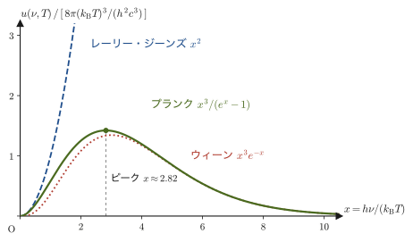
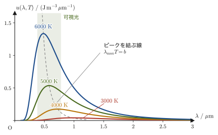
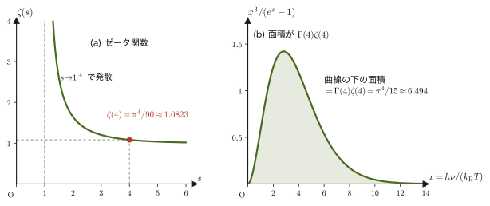
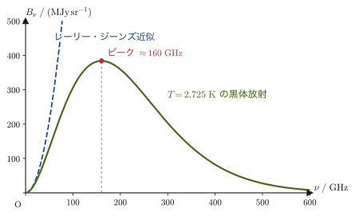
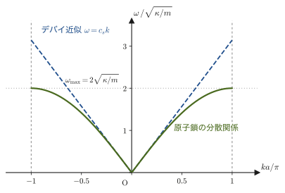
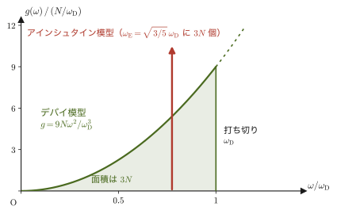
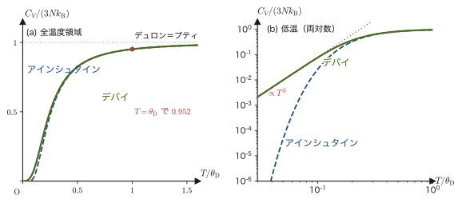

第53章光子とフォノンの統計 — 黒体放射とデバイ模型
鉄の棒を火の中に入れて熱すると，はじめは黒ずんでいたものがやがて暗い赤に光りはじめ，さらに熱するとオレンジ，黄色，そして白っぽい光へと変わっていく．夜空の星に赤い星や青白い星があるのも同じ理由で，星の色は表面温度で決まっている．高校物理では，光が「光子（フォトン）」という粒子の流れでもあり，1個の光子がもつエネルギーが $E=h\nu$（$h$ はプランク定数，$\nu$ は振動数）であることを学んだ．この章では，箱の中に閉じ込められた「光子の集団」に前の章までの統計力学を適用し，熱した物体の光の色と明るさ（黒体放射）が温度だけからどのように決まるのかを，ゼロから導く．
その結果は驚くほど豊かである．光のエネルギー密度は温度の4乗に比例する（シュテファン＝ボルツマンの法則）．スペクトルのピークの波長は温度に反比例する（ウィーンの変位則）．そして，宇宙全体が約 $2.725\ \mathrm{K}$ の黒体放射で満たされている（宇宙マイクロ波背景放射）という，ビッグバンの「化石」にもたどり着く．
後半では，同じ計算の型を固体の中の原子の振動に当てはめる．固体の中の原子の振動は，結晶全体を伝わる音の波（弾性波）の重ね合わせであり，その量子を「フォノン」とよぶ．光子の計算とほとんど同じ計算で，第51章のアインシュタイン模型では説明できなかった「極低温の比熱が $T^3$ に比例する」という実験事実（デバイの $T^3$ 則）が導かれる．第47章で用意した積分 $\int_0^\infty x^p/(e^x-1)\,\dd x$ が，ここで初めて本領を発揮する．本章は第VII部（統計力学）の最終章でもあり，最後に第47〜53章の全体を振り返る．
- 空洞内の電磁波のモードを調和振動子の集まりとして捉える描像と，光子の数が保存しないために化学ポテンシャルが $\mu=0$ となること
- モードの数え上げ（状態密度 $g(\omega)=V\omega^2/(\pi^2c^3)$）と，プランクの放射式 $u(\nu,T)=\dfrac{8\pi h\nu^3}{c^3}\dfrac{1}{e^{h\nu/k_{\mathrm B}T}-1}$ の統計力学的な導出（大学数学（AD 02）第49章との対応）
- ウィーンの変位則 $\lambda_{\max}T=2.898\times10^{-3}\ \mathrm{m\,K}$ を超越方程式 $x=5(1-e^{-x})$ から導き，太陽・人体・白熱電球の色と温度を見積もること
- シュテファン＝ボルツマンの法則と定数 $\sigma=\dfrac{2\pi^5k_{\mathrm B}^4}{15h^3c^2}$ を，第47章の積分 $\Gamma(4)\zeta(4)=\pi^4/15$ から計算し，光子気体の圧力・エントロピーを求めること
- 宇宙マイクロ波背景放射（約 $2.725\ \mathrm{K}$）の光子数密度・エネルギー密度・ピーク振動数の見積もり
- 格子振動とフォノン，デバイ模型（状態密度，デバイ振動数 $\omega_{\mathrm D}$，デバイ温度 $\theta_{\mathrm D}$），低温比熱の $T^3$ 則と高温でのデュロン＝プティの法則，アインシュタイン模型との比較
- 光子とフォノンが「ボース統計＋状態密度＋第47章の積分」という同じ枠組みで扱えること，第VII部全体の見取り図
もとにしたノート：本章はノートにない内容を補った章である．関連するノート：望月泰英『物理学ノート 統計力学』．
53.1 光子気体と化学ポテンシャル $\mu=0$
53.1.1 黒体と空洞放射
すべての物体は，温度に応じた電磁波を出している．これを熱放射（thermal radiation）という．室温の私たちの体は赤外線を出しており，鉄が $1000\ \mathrm{K}$ 前後まで熱せられると，赤外線に加えて赤い可視光も強く出しはじめる．物体の表面の性質（ざらざらか，つるつるか，どんな材質か）によって，出す光の強さは少しずつ違う．ところが，入ってきた光をすべて吸収する理想的な物体を考えると，その熱放射には材質によらない普遍的な形がある．入射する電磁波をすべて吸収する理想的な物体を黒体（black body）という．
現実に黒体にかぎりなく近いものは，簡単につくれる．内側が真空の箱（空洞）の壁に，小さな穴をあければよい．穴から入った光は，壁で何度も反射・吸収されるうちに，穴から逃げ出す前にほとんど吸収される．そのため，穴は入射光をほぼ完全に吸収する「黒い面」になる．逆に，壁を一定の温度 $T$ に保ったまま十分な時間が経つと，空洞の中の電磁波は壁と熱平衡になり，穴からはその内部の放射が少しだけのぞき出す．これが空洞放射（cavity radiation）または黒体放射（black-body radiation）である（図53.1）．
法則53.1 空洞放射の普遍性（キルヒホッフの熱放射の法則の帰結）
熱平衡にある空洞の中の電磁波のスペクトル（振動数ごとのエネルギーの分布）は，壁の材質や空洞の形によらず，温度 $T$ だけで決まる．
なぜ？：壁の材質によらないと言える理由
材質の異なる2つの空洞 A，B をつくり，同じ温度 $T$ に保つとする．A と B を小さな窓でつなぐと，両者は互いに光をやりとりする．もし A の中の放射のスペクトルが B のそれと違っていたら，ある振動数では A から B へ正味のエネルギーが流れ，別の振動数では逆向きに流れることになる．適当なフィルターを窓に置けば，「一方の空洞だけがひとりでに温度を上げていく」ことが可能になってしまい，熱を低温から高温へ自発的に移す（熱力学第2法則に反する，第23章 23.4節）ことになる．だから，2つの空洞のスペクトルは一致しなければならない．キルヒホッフ（Kirchhoff）が1859〜60年にこのような論法で示した．なお，「キルヒホッフの熱放射の法則」そのものは，「熱平衡にある物体の放射率は吸収率に等しい」（黒体は吸収率が1なので放射率も1）という内容で，空洞放射の普遍性はそこから従う．したがって，空洞放射のスペクトルを求めるには，壁の細かい性質を知る必要はなく，「温度 $T$ で熱平衡にある電磁場」だけを統計力学で調べればよい．
53.1.2 電磁場のモードと光子
空洞の中の電磁波は，壁で反射しながら定在波（第11章 11.7節）をつくる．空洞の形と境界条件で許される定在波は，波数ベクトル $\bm k$（大きさ $k=2\pi/\lambda$）と偏光（電場の振動方向）の組で指定され，それぞれをモード（mode）とよぶ．マクスウェル方程式（第42章 42.3節）は線形なので，異なるモードは互いに影響しあわない．各モードでは電場・磁場が時間とともに単振動する（第7章の単振動と同じ）から，空洞内の電磁場全体は，独立な調和振動子の集まりとみなせる．モード $j$ の角振動数は $\omega_j=c\abs{\bm k_j}$ である（$c$ は光速）．
量子力学に従うと，角振動数 $\omega$ の調和振動子のエネルギーはとびとびになる（第51章の法則51.1）．電磁場のモードについてもこの事実が成り立ち，次のことが知られている．
法則53.2 電磁場のモードのエネルギー準位と光子（量子力学の結果）
空洞内の電磁場の1つのモード（角振動数 $\omega$）がもちうるエネルギーは，量子力学によれば $$ E_n=\hbar\omega\left(n+\frac12\right),\qquad n=0,1,2,\ldots $$ であることが知られている．整数 $n$ を，そのモードにある光子（photon）の数とよぶ．光子1個は，エネルギー $\hbar\omega=h\nu$（$\hbar=h/2\pi$，$\omega=2\pi\nu$），運動量の大きさ $\hbar k=h\nu/c$ をもつ粒子として振る舞う．光子は互いに区別できない同種粒子で，ボース粒子である（第52章 52.4節）．
この事実の導出（電磁場の量子化）は量子力学の教材に譲り，ここでは結果を使う．高校物理で学んだ「光子1個のエネルギーは $h\nu$」という式は，各モードのエネルギー準位の間隔 $\hbar\omega$ にほかならない．$n=0$ のとき（光子がいない状態）でも，エネルギーは $\tfrac12\hbar\omega$（零点エネルギー，第51章）だけ残っている．
したがって，空洞内の光は「モードという量子状態の集まり」であり，「$n_j$ 個の光子が，モード $j$ という量子状態に入っている」と言い換えられる．光子どうしはほとんど衝突しないので，これは光子の理想気体（光子気体，photon gas）とみなせる．気体分子の速度分布が決まるのは分子どうしの衝突のおかげだが，光子気体が熱平衡に達するのは，壁が光子を出し入れするおかげである（図53.1）．
注意：零点エネルギーはどうなるのか
すべてのモードの零点エネルギー $\tfrac12\hbar\omega$ を足し合わせると，モードは無限に多いので発散してしまう．しかしこの部分は温度によらない定数であり，熱放射のスペクトルや温度変化を調べるときには関係しない（穴から出てくる放射にも寄与しない）．本章では温度に依存する部分，つまり $n\hbar\omega$ の部分だけを扱う．なお，零点エネルギーは完全に無意味なわけではない．たとえば，向かい合わせに置いた2枚の金属板のあいだで電磁場のモードが制限されると，板のあいだに引力がはたらく（カシミール効果，1948年に理論的に予言された）．
53.1.3 光子の化学ポテンシャルは $\mu=0$
第52章では，ボース粒子の1つの量子状態（エネルギー $\varepsilon$）に入る平均の粒子数が $$ \langle n\rangle=\frac{1}{e^{(\varepsilon-\mu)/k_{\mathrm B}T}-1} $$ になることを学んだ．光子ではこの $\varepsilon$ が $\hbar\omega$ に当たる（なお，この章では電気素量を使わないので，指数関数を $e^{\cdots}$ と書く．$e=2.718\ldots$ はネイピア数である）．では，化学ポテンシャル $\mu$ はいくつだろうか．
法則53.3 光子気体の化学ポテンシャルは $\mu=0$
熱平衡にある空洞内の光子気体の化学ポテンシャルは $\mu=0$ である．
導出：$\mu=0$ になる2つの見方
(1) 熱力学の平衡条件から．第52章で見たように，化学ポテンシャルは $\mu=\left(\pdiff{A}{N}\right)_{T,V}$，すなわち「温度と体積を一定にして粒子を1個増やすときの自由エネルギーの増分」である．普通の気体では粒子数 $N$ は与えられた定数だが，光子は壁が自由に吸収・放出するので，光子数 $N$ は保存されない．温度 $T$ と体積 $V$ を一定にしたとき，熱平衡は自由エネルギー $A(T,V,N)$ が最小になる状態（第30章 30.4節）であり，しかも $N$ は自由に変わりうるのだから，最小の条件は $$ \left(\pdiff{A}{N}\right)_{T,V}=0 $$ である．これが $\mu=0$ ということにほかならない．
(2) 分配関数の和から．1つのモード（角振動数 $\omega$）の光子数を $n$ とし，光子1個分の追加エネルギーを $\hbar\omega$ とすると（零点エネルギーは除く），このモードの分配関数は，$n$ について制限なしに和をとって $$ Z_{\mathrm{mode}}=\sum_{n=0}^{\infty}e^{-\beta\hbar\omega n}=\sum_{n=0}^{\infty}x^n=\frac{1}{1-x},\qquad x\equiv e^{-\beta\hbar\omega}\ (0\lt x\lt1) $$ になる（無限等比級数の和の公式）．光子数を一定に保つ拘束がないので，第52章のグランドカノニカル分布で $e^{\beta\mu n}$ の因子を1（$\mu=0$）とおいたものと同じ形である．平均の光子数は， $$ \langle n\rangle=\frac{\sum_n n\,x^n}{\sum_n x^n}=(1-x)\cdot\frac{x}{(1-x)^2}=\frac{x}{1-x}=\frac{1}{e^{\beta\hbar\omega}-1} $$ となる（$\sum_{n}n x^n=x\,\dd/\dd x\sum_n x^n=x/(1-x)^2$ を使い，最後に分子・分母に $e^{\beta\hbar\omega}$ を掛けた）．これは第52章のボース＝アインシュタイン分布で $\mu=0$ とおいた式と一致する．
（導出終わり）
式 \eqref{eq:53-bose} に光子1個のエネルギー $\hbar\omega$ を掛けると，モード1つあたりの（零点を除いた）平均エネルギー $\hbar\omega/(e^{\hbar\omega/k_{\mathrm B}T}-1)$ になる．これは，第51章の量子調和振動子の平均エネルギー（51.2節で求めた平均エネルギーの第2項）や，AD 02 第49章 49.4節でプランクの量子仮説から導いた式と，まったく同じ形である．AD 02 では「エネルギーは $h\nu$ の整数倍しかとれない」という仮定から出発したが，ここでは「モードは調和振動子であり，光子は $\mu=0$ のボース粒子である」という統計力学の一般論から同じ式が出てきた．
注意：$\mu=0$ はどんな粒子にも言えるわけではない
$\mu=0$ になるのは，粒子数が保存されず，熱平衡のもとで自由に生成・消滅する粒子（光子や，あとで出てくるフォノン）に限られる．金属の中の電子や，液体ヘリウム4の原子のように，粒子数が保存される系では $\mu\ne0$ であり，$\mu$ は粒子数（密度）と温度で決まる（第52章）．「$\mu=0$」は，「粒子数を外から指定できない」ことの言い換えである．
例題53.1 室温の空洞の中の平均光子数
温度 $T=300\ \mathrm K$ の空洞について，次の3つのモードの平均光子数 $\langle n\rangle$ を，式 \eqref{eq:53-bose} から求めよ．(a) 可視光（波長 $\lambda=500\ \mathrm{nm}$），(b) 赤外線（$\lambda=10\ \mu\mathrm m$），(c) 電子レンジのマイクロ波（振動数 $\nu=2.45\ \mathrm{GHz}$）．
解答 $x\equiv h\nu/(k_{\mathrm B}T)$ とおく．$k_{\mathrm B}T=1.380649\times10^{-23}\ \mathrm{J/K}\times300\ \mathrm K=4.142\times10^{-21}\ \mathrm J$．
(a) $h\nu=hc/\lambda=6.626\times10^{-34}\ \mathrm{J\,s}\times2.998\times10^{8}\ \mathrm{m/s}\,/\,(5.00\times10^{-7}\ \mathrm m)=3.97\times10^{-19}\ \mathrm J$（約 $2.5\ \mathrm{eV}$）．よって $x=3.97\times10^{-19}/4.142\times10^{-21}=95.9$ で， $$ \langle n\rangle=\frac{1}{e^{95.9}-1}\approx e^{-95.9}\approx2.2\times10^{-42} $$ （$x\gg1$ のとき分母の $-1$ は無視できる）．室温の物体の出す可視光の光子は，事実上ゼロである．だから，暗闇では室温の物体は光って見えない．
(b) $h\nu=hc/\lambda=1.986\times10^{-20}\ \mathrm J$ より $x=4.796$． $$ \langle n\rangle=\frac{1}{e^{4.796}-1}=\frac{1}{121.1-1}\approx8.3\times10^{-3} $$ 波長 $10\ \mu\mathrm m$ 付近の赤外線モードの平均光子数は約 $8.3\times10^{-3}$ である．$\langle n\rangle\ll1$ のときは平均光子数が「光子が1個以上いる確率」にほぼ等しいので，約 $0.8\%$ の確率で光子がいる，と読める．人体（約 $310\ \mathrm K$）が赤外線を出しているのは，こうした低いエネルギーのモードだからである．
(c) $h\nu=6.626\times10^{-34}\times2.45\times10^{9}=1.62\times10^{-24}\ \mathrm J$ より $x=3.92\times10^{-4}\ll1$．このときは $e^x-1\approx x+x^2/2$ を使うと， $$ \langle n\rangle\approx\frac1x-\frac12\approx2.55\times10^{3} $$ となる．マイクロ波のモードには，1つのモードあたり平均で2500個ほどの光子がいる．光子が非常に多いので，光は「粒子の集まり」というより，連続的な波として振る舞う（古典電磁気学が使える領域）．
53.2 空洞内の電磁波のモードを数える
光子気体の全エネルギーを求めるには，「モード1つあたりの平均エネルギー」（式 \eqref{eq:53-bose} に $\hbar\omega$ を掛けたもの）に，「モードがいくつあるか」を掛けて足し上げればよい．この節では後者，つまりモードの数え上げを行う．これは，箱に閉じ込められた波の定在波の数を数える計算で，AD 02 第49章 49.5節で詳しく行ったものと，第52章 52.8節で電子について行ったものと同じ数え方である．違いは，偏光による2倍と，分散関係が $\omega=cq$（光）であることだけなので，この節では骨格だけをまとめ，詳しい式変形はそちらに任せる．
定義53.1 状態密度（モードの密度）
角振動数が $\omega$ から $\omega+\dd\omega$ の間にあるモード（量子状態）の数を $g(\omega)\,\dd\omega$ と書き，$g(\omega)$ を状態密度（density of states）とよぶ．$g(\omega)$ は体積 $V$ の空洞全体についての値であり，単位は「モード数／（rad/s）」である．AD 02 第49章では単位体積あたりの密度 $\rho(\nu)=g/V$ を，振動数 $\nu$ で表して使っていた．両者は $g(\omega)\,\dd\omega=V\rho(\nu)\,\dd\nu$ で結ばれる．
53.2.1 定在波を数える
1辺が $L$ の立方体の空洞（体積 $V=L^3$）を考える．壁（金属）では電場の壁に平行な成分が $0$ になる．この境界条件を満たす定在波は，向かい合う壁のあいだの距離 $L$ に半波長の整数倍がちょうど入るものに限られる（AD 02 第49章の $\sin\frac{\pi n_1}{L}x\,\sin\frac{\pi n_2}{L}y\,\sin\frac{\pi n_3}{L}z$ の形の波と同じ考え方である）ので，波数ベクトルの成分は $$ k_x=\frac{\pi}{L}n_1,\quad k_y=\frac{\pi}{L}n_2,\quad k_z=\frac{\pi}{L}n_3\qquad(n_1,n_2,n_3=1,2,3,\ldots) $$ ととびとびの値をとる（1次元の場合は第11章 11.7節の弦の定在波と同じ理屈である）．ここでは $n_1,n_2,n_3\ge1$ の格子点だけを数える（完全導体の立方体には，$n_i$ のどれか1つが $0$ の波もあり，その波の偏光は1つに減る．そのような波は，体積でなく表面積に比例する個数しかなく，$qL\gg1$ のときには無視できる．下の注意も参照）．これを，$(k_x,k_y,k_z)$ を座標とする波数空間（$k$ 空間）の格子点として眺めると，格子点は間隔 $\pi/L$ で並び，1個の格子点が占める体積は $(\pi/L)^3$ である（図53.2）．さらに，電磁波は横波（電場が進行方向に垂直，第42章 42.4節）なので，同じ $\bm k$ に対して独立な偏光が2つある．
導出：状態密度 $g(\omega)=V\omega^2/(\pi^2c^3)$
波数空間で原点からの距離（波数の大きさ $k=\abs{\bm k}$）が $q$ 以下の格子点の数を数える．それは，半径 $q$ の球のうち $n_1,n_2,n_3\gt0$ の部分（$1/8$ の球）の体積を，格子点1個の体積 $(\pi/L)^3$ で割ったものである（$L$ が大きければこの近似は非常によい）．偏光の自由度2を掛けて，波数の大きさが $q$ 以下のモードの総数は $$ \mathcal N(q)=2\times\frac18\cdot\frac{4\pi}{3}q^3\bigg/\left(\frac{\pi}{L}\right)^3=\frac{q^3L^3}{3\pi^2}=\frac{Vq^3}{3\pi^2} $$ となる．波数の大きさと角振動数は $\omega=cq$（光速 $c$ の波）で結ばれるから，$q=\omega/c$ を代入して $\mathcal N(\omega)=V\omega^3/(3\pi^2c^3)$．これを $\omega$ で微分すれば，$\omega$ から $\omega+\dd\omega$ の間のモード数が得られる： \begin{equation} g(\omega)=\diff{\mathcal N}{\omega}=\frac{V\omega^2}{\pi^2c^3} \label{eq:53-dos-photon} \end{equation} 振動数 $\nu=\omega/2\pi$ で書き直すと，$g(\omega)\,\dd\omega=\dfrac{V(2\pi\nu)^2}{\pi^2c^3}\,2\pi\,\dd\nu=\dfrac{8\pi V\nu^2}{c^3}\,\dd\nu$，すなわち単位体積あたり $\rho(\nu)=8\pi\nu^2/c^3$ となり，AD 02 第49章の定理49.4と一致する．
（導出終わり）
イメージ：周期境界条件で数えても同じ結果になる
壁を「端と端をつないだ輪」にして（周期境界条件 $e^{ik_xL}=1$ など），進行波 $e^{i\bm k\cdot\bm r}$ でモードを数える方法もよく使われる．このとき許される波数は $k_x=2\pi n_1/L$（$n_1$ は正負と $0$ を含む整数）で，格子点の間隔は $2\pi/L$，全方向（球全体）を数える．偏光を含めた個数は $\mathcal N(q)=2\times\frac{4\pi}{3}q^3/(2\pi/L)^3=Vq^3/(3\pi^2)$ で，上の結果と同じである．モードの数は境界条件の細部や空洞の形によらず，体積 $V$ だけで決まる（$L$ が波長より十分大きいとき）．この方法は，あとで固体中の格子振動（フォノン）を数えるときに使う．
注意：連続近似はなぜ許されるのか
格子点の個数を「体積の比」で置き換える近似は，波長が箱の大きさ $L$ よりずっと短い（$qL\gg1$）ときに正確である．本文で述べた，$n_1,n_2,n_3$ のどれかが $0$ の波（偏光の数が1つ減る）など，本当は細かい補正があるが，その補正は「体積に比例する主要項」に比べて $1/(qL)$ 程度の小さな割合にすぎず，マクロな空洞では無視できる．例題53.2で，モードの数が実際にどれほど多いかを見てみよう．
ここまでの結果を，AD 02 第49章の流れと本章の流れで対応づけておく（表53.1）．AD 02 では「エネルギー等分配則（1モード $=k_{\mathrm B}T$）」「量子仮説」「状態密度」を別々に導いたが，本章では最初の2つが「光子は $\mu=0$ のボース粒子」という一つの原理にまとめられる．
| AD 02 第49章 | 本章での位置づけ |
|---|---|
| 49.2節 エネルギー等分配則で1モード $=k_{\mathrm B}T$，レーリー・ジーンズの法則，ウィーンの輻射式 | 1モードの平均エネルギーを式 \eqref{eq:53-bose} から出す（53.1節）．$\hbar\omega\ll k_{\mathrm B}T$ の極限がレーリー・ジーンズの法則に，$\hbar\omega\gg k_{\mathrm B}T$ の極限がウィーンの輻射式になる（53.3節） |
| 49.4節 量子仮説による平均エネルギー $h\nu/(e^{h\nu/kT}-1)$ | 光子は数が保存されない（$\mu=0$）ボース粒子であることから導かれる（53.1節） |
| 49.5節 定在波の数え上げ，状態密度 $\rho(\nu)=8\pi\nu^2/c^3$ | 要点のみ再掲（53.2節）．リンクで参照 |
| 49.3節 プランクの輻射式と2つの極限，例題49.4（ピーク振動数） | 式の再掲と波長表示（53.3節），波長版のウィーンの変位則（53.4節） |
| （AD 02 にはない部分） | 全エネルギー $\propto T^4$ と $\sigma$（第47章の積分），光子気体の圧力・エントロピー，宇宙マイクロ波背景放射（53.5〜53.6節），フォノンとデバイ模型（53.7節以降） |
例題53.2 $1\ \mathrm{cm^3}$ の空洞にある可視光のモードの数
体積 $V=1\ \mathrm{cm^3}=10^{-6}\ \mathrm{m^3}$ の空洞の中で，波長が $499.5\ \mathrm{nm}$ から $500.5\ \mathrm{nm}$（幅 $\Delta\lambda=1\ \mathrm{nm}$）の間にある電磁波のモード（偏光を含む）の数を見積もれ．
解答 波長 $\lambda=500\ \mathrm{nm}$ に対応する振動数は $\nu=c/\lambda=2.998\times10^{8}/(5.00\times10^{-7})=5.996\times10^{14}\ \mathrm{Hz}$．波長の幅 $\Delta\lambda$ に対応する振動数の幅は，$\nu=c/\lambda$ の微分 $\dd\nu=-(c/\lambda^2)\,\dd\lambda$ の大きさをとって $$ \Delta\nu=\frac{c}{\lambda^2}\Delta\lambda=\frac{2.998\times10^{8}}{(5.00\times10^{-7})^2}\times1.0\times10^{-9}=1.20\times10^{12}\ \mathrm{Hz} $$ モードの数は，式 $g(\nu)\,\Delta\nu=8\pi V\nu^2\Delta\nu/c^3$ より $$ 8\pi\times10^{-6}\times\frac{(5.996\times10^{14})^2\times1.20\times10^{12}}{(2.998\times10^{8})^3}\approx4.0\times10^{11} $$ である（単位は $\mathrm{m^3\cdot s^{-2}\cdot s^{-1}}/(\mathrm{m^3\,s^{-3}})=1$ となり，無次元の個数である）．つまり，$1\ \mathrm{cm^3}$ の空洞の，たった $1\ \mathrm{nm}$ の波長の幅の中に，約 $4\times10^{11}$ 個ものモードがある．モードの数がこれほど多いので，モードの数を連続的な関数 $g(\omega)$ で近似することにまったく問題はない．角振動数の形 $g(\omega)\,\Delta\omega$（$\omega=2\pi\nu$，$\Delta\omega=2\pi\Delta\nu$）で計算しても同じ値になる．
53.3 プランクの放射式
これで，2つの部品が揃った．「モード1つあたりの平均エネルギー」と「モードの数」である．体積 $V$ の空洞で，角振動数が $\omega$ から $\omega+\dd\omega$ の間にあるモードは $g(\omega)\,\dd\omega$ 個あり（式 \eqref{eq:53-dos-photon}），各モードは平均で $\langle n\rangle$ 個の光子（式 \eqref{eq:53-bose}）を含み，光子1個のエネルギーは $\hbar\omega$ である．
導出：プランクの放射式
$\omega$ から $\omega+\dd\omega$ の間にある電磁波のエネルギーは，「モードの数」×「1モードの平均光子数」×「光子1個のエネルギー」であるから，これを体積 $V$ で割って単位体積あたりのエネルギー $u(\omega,T)\,\dd\omega$ を求めると， $$ u(\omega,T)\,\dd\omega=\frac{1}{V}\,g(\omega)\,\dd\omega\times\langle n\rangle\times\hbar\omega =\frac{1}{V}\cdot\frac{V\omega^2}{\pi^2c^3}\cdot\frac{1}{e^{\hbar\omega/k_{\mathrm B}T}-1}\cdot\hbar\omega\,\dd\omega $$ となる（体積 $V$ が約分されて消える．エネルギーの密度は空洞の大きさによらない）．整理すると次のようになる．
（導出終わり）
定理53.1 プランクの放射式
温度 $T$ の空洞放射の，単位体積あたりのエネルギーは，角振動数 $\omega$ から $\omega+\dd\omega$ の間で \begin{equation} u(\omega,T)\,\dd\omega=\frac{\hbar}{\pi^2c^3}\,\frac{\omega^3}{e^{\hbar\omega/k_{\mathrm B}T}-1}\,\dd\omega \label{eq:53-planck-omega} \end{equation} である．振動数 $\nu=\omega/2\pi$ で書くと（$\hbar\omega=h\nu$，$\dd\omega=2\pi\,\dd\nu$ を代入する）， \begin{equation} u(\nu,T)\,\dd\nu=\frac{8\pi h\nu^3}{c^3}\,\frac{1}{e^{h\nu/k_{\mathrm B}T}-1}\,\dd\nu \label{eq:53-planck-nu} \end{equation} となり，波長 $\lambda=c/\nu$ で書くと（$\abs{\dd\nu}=(c/\lambda^2)\,\dd\lambda$ を使う）， \begin{equation} u(\lambda,T)\,\dd\lambda=\frac{8\pi hc}{\lambda^5}\,\frac{1}{e^{hc/(\lambda k_{\mathrm B}T)}-1}\,\dd\lambda \label{eq:53-planck-lambda} \end{equation} となる．
式 \eqref{eq:53-planck-omega} から式 \eqref{eq:53-planck-nu} への書き換えの途中を書いておく．$\hbar=h/2\pi$，$\omega=2\pi\nu$，$\dd\omega=2\pi\,\dd\nu$ を代入すると， $$ \frac{h/2\pi}{\pi^2c^3}\,(2\pi\nu)^3\,2\pi\,\dd\nu=\frac{h\cdot8\pi^3\nu^3\cdot2\pi}{2\pi\cdot\pi^2c^3}\,\dd\nu=\frac{8\pi h\nu^3}{c^3}\,\dd\nu $$ となり（分子・分母の $2\pi$ が消える），指数の $\hbar\omega/k_{\mathrm B}T=h\nu/k_{\mathrm B}T$ はそのまま置き換わる．
式 \eqref{eq:53-planck-nu} は，AD 02 第49章の定理49.2（プランクの輻射式）と同じ式である．式 \eqref{eq:53-planck-lambda} を式 \eqref{eq:53-planck-nu} から導く途中を書いておく．$\nu=c/\lambda$ を代入すると $\nu^3=c^3/\lambda^3$ だから，$\dfrac{8\pi h\nu^3}{c^3}\dd\nu\to\dfrac{8\pi h}{\lambda^3}\cdot\dfrac{c}{\lambda^2}\dd\lambda=\dfrac{8\pi hc}{\lambda^5}\dd\lambda$ となり，指数の $h\nu/k_{\mathrm B}T=hc/(\lambda k_{\mathrm B}T)$ もそのまま置き換わる．次元の確認をしておく．式 \eqref{eq:53-planck-lambda} の $u(\lambda,T)$ は $8\pi hc/\lambda^5$ の次元をもち，$[\mathrm{J\,s}][\mathrm{m/s}]/[\mathrm{m^5}]=\mathrm{J/m^4}$（単位体積・単位波長あたりのエネルギー）であって，$\dd\lambda$ を掛けると $\mathrm{J/m^3}$（エネルギー密度）になる．
注意：$u(\nu)$ と $u(\lambda)$ は「同じ量を別の変数で表した」だけでも，ピークの位置が違う
$u(\nu,T)\,\dd\nu$ と $u(\lambda,T)\,\dd\lambda$ は同じエネルギーを表している．だから，$\dd\lambda$ と $\dd\nu$ は $\abs{\dd\nu}=(c/\lambda^2)\,\dd\lambda$ の関係で結ばれ，関数 $u(\nu,T)$ と $u(\lambda,T)$ は同じ形ではない（$u(\lambda)=u(\nu)\cdot c/\lambda^2$）．そのため，$u(\nu)$ が最大になる振動数 $\nu_{\max}$ から $\lambda=c/\nu_{\max}$ を計算しても，$u(\lambda)$ が最大になる波長 $\lambda_{\max}$ とは一致しない．この点は 53.4 節で数値を使って確かめる．
53.3.1 2つの極限 — レーリー・ジーンズとウィーン
プランクの式は，2つの極限で，古典物理学から導かれていた古い式に帰着する（詳しくは AD 02 第49章 49.3節）．$x\equiv h\nu/(k_{\mathrm B}T)$ とおく．
- 低振動数（$x\ll1$）：$e^x-1\approx x$ より $1/(e^x-1)\approx1/x=k_{\mathrm B}T/(h\nu)$．したがって $u(\nu,T)\approx\dfrac{8\pi\nu^2}{c^3}k_{\mathrm B}T$．これは，「モード1つあたり $k_{\mathrm B}T$」（エネルギー等分配則，第50章 50.7節）に状態密度を掛けたレーリー・ジーンズの法則である．
- 高振動数（$x\gg1$）：$e^x-1\approx e^x$ より $u(\nu,T)\approx\dfrac{8\pi h\nu^3}{c^3}e^{-h\nu/k_{\mathrm B}T}$．これはウィーンの輻射式である．

応用：紫外破綻はなぜ解消するのか — 高振動数のモードが「凍結」する
レーリー・ジーンズの式を全振動数で足し合わせると，$u\propto\nu^2$ なので積分が発散する（「紫外破綻」）．古典物理学では，どんなに振動数が高いモードでも $k_{\mathrm B}T$ のエネルギーをもてると仮定していたからである．量子論では，光子1個のエネルギー $h\nu$ が $k_{\mathrm B}T$ よりずっと大きいモードには，平均してほとんど光子が入れない（例題53.1(a)）．つまり，$h\nu\gg k_{\mathrm B}T$ のモードは熱エネルギーでは励起されず「凍結」する．これは，第51章のアインシュタイン模型で，$\hbar\omega\gg k_{\mathrm B}T$ の低温では振動が励起されず，比熱が $0$ に落ちていくのとまったく同じ仕組みである．光の分布の量子論的な修正（プランク，1900年）と固体の比熱の量子論的な修正（アインシュタイン，1907年）は，同じ根から出ている．
補足：光子を「区別できない粒子」として数える — ボース＝アインシュタイン統計の起源
本章では，光子を区別のできないボース粒子とみなし，各モードに何個入るかを数えることで，プランクの式を導いた．プランク自身は1900年に，量子仮説（エネルギー要素 $h\nu$）を導入してこの式に到達した．「光子を区別できない粒子として数える」という見方で式を導いたのは，1924年のボース（Bose）で，アインシュタインがこれを一般の粒子に拡張した．第52章の「ボース＝アインシュタイン分布」の名前は，ここに由来する．
例題53.3 太陽光のスペクトルの数値とプランクの式の2つの極限
太陽の表面（光球）の温度を $T=5772\ \mathrm K$ として，波長 $\lambda=500\ \mathrm{nm}$ における $u(\lambda,T)$ を式 \eqref{eq:53-planck-lambda} から求め，(1) レーリー・ジーンズの式 $u_{\mathrm{RJ}}(\lambda,T)=8\pi k_{\mathrm B}T/\lambda^4$ と比べよ．また，(2) $x=h\nu/(k_{\mathrm B}T)=0.1$ と $x=10$ で，レーリー・ジーンズの式とウィーンの式がプランクの式の何倍になるかを求めよ．
解答 (1) まず $x=hc/(\lambda k_{\mathrm B}T)$ を計算する．$hc=1.98645\times10^{-25}\ \mathrm{J\,m}$，$\lambda k_{\mathrm B}T=5.00\times10^{-7}\times1.380649\times10^{-23}\times5772=3.985\times10^{-26}\ \mathrm{J\,m}$ なので $x=4.985$，$e^{x}-1=145.2$．よって $$ u(\lambda,T)=\frac{8\pi hc}{\lambda^5}\cdot\frac{1}{e^x-1}=\frac{8\pi\times1.98645\times10^{-25}}{(5.00\times10^{-7})^5}\cdot\frac1{145.2}\approx1.10\times10^{6}\ \mathrm{J/m^4} $$ （波長 $1\ \mathrm{nm}$ あたりに直すと約 $1.1\times10^{-3}\ \mathrm{J/m^3}$）．一方，レーリー・ジーンズの式は $u_{\mathrm{RJ}}=8\pi\times3.985\times10^{-26}\ \mathrm{J\,m}/(\lambda^5)$ より $3.2\times10^{7}\ \mathrm{J/m^4}$ で，プランクの式の約29倍にもなる．可視光の波長では，古典論（等分配則）は大きく破綻している．
(2) $x=0.1$ のとき，プランクの式の $x$ 依存部分は $x^3/(e^x-1)=0.001/0.10517=0.009508$．レーリー・ジーンズは $x^2=0.01$ なので，比は $0.01/0.009508=1.052$（約5%大きい）．ウィーンは $x^3e^{-x}=0.001\times0.9048=0.0009048$ で，比は $0.0009048/0.009508=0.0952$（約1割しか表せない）．$x=10$ では，プランクは $10^3/(e^{10}-1)=0.045402$，レーリー・ジーンズは $x^2=100$ で比は約 $2200$，ウィーンは $10^3e^{-10}=0.045400$ で比は $0.99995$（ほぼ一致）．低振動数ではレーリー・ジーンズ，高振動数ではウィーンがよく合うことが数値で確かめられた．
53.4 ウィーンの変位則
図53.3 のように，プランクの式は振動数のある値で最大になる．温度を上げるとピークはどう動くだろうか．鉄を熱したときに赤から白へ変わるのは，ピークが赤外線から可視光へ移動していくことに対応している．ここでは，ピークの位置を式から正確に求める．
導出：ピークの波長 $\lambda_{\max}$ を決める方程式
式 \eqref{eq:53-planck-lambda} で，温度を固定して $x\equiv hc/(\lambda k_{\mathrm B}T)$ とおく．$\lambda=hc/(k_{\mathrm B}Tx)$ を代入して整理すると， $$ u(\lambda,T)=\frac{8\pi hc}{\lambda^5}\frac{1}{e^x-1}=8\pi hc\left(\frac{k_{\mathrm B}Tx}{hc}\right)^5\frac{1}{e^x-1}=\frac{8\pi(k_{\mathrm B}T)^5}{(hc)^4}\cdot\frac{x^5}{e^x-1} $$ となる．$T$ を固定したとき $x$ と $\lambda$ は1対1に対応するから，$u(\lambda,T)$ を最大にする $\lambda$ を求めることは，$f(x)=x^5/(e^x-1)$ を最大にする $x$ を求めることと同じである．$f$ を $x$ で微分して $0$ とおく： $$ f'(x)=\frac{5x^4(e^x-1)-x^5e^x}{(e^x-1)^2}=0\quad\Longrightarrow\quad5(e^x-1)=xe^x $$ 両辺を $e^x$ で割ると，次の方程式になる．
\begin{equation} x=5\left(1-e^{-x}\right) \label{eq:53-wien-eq} \end{equation}この解が最大を与えることの確認：$f(0)=0$，$x\to\infty$ で $f(x)\to0$，その間では $f(x)\gt0$ である．$f'(x)=0$ の解は，次の53.4.1節で示すように $x\gt0$ でただ1つなので，その点で $f$ は最大になる．また，$f(x)=x^5/(e^x-1)$ の $x^5$ を $x^3\cdot x^2$ と書くと，$x^3/(e^x-1)$ は振動数で表したプランクの式の形（式 \eqref{eq:53-planck-nu}）であり，余分な $x^2$ は，変数を $\nu$ から $\lambda$ に変えたときの因子 $c/\lambda^2$ が $x^2$ に比例することから出てくる（下の $x_\lambda=4.965$ と $x_\nu=2.821$ の違いを参照）．
（導出終わり）
53.4.1 超越方程式の解き方
式 \eqref{eq:53-wien-eq} は，$x$ とその指数関数が混ざった方程式（超越方程式）で，$x$ について初等関数の式では解けない．しかし，数値的には簡単に解ける．まず，解がちょうど1つあることを確かめよう．$\psi(x)\equiv5(1-e^{-x})-x$ とおく．$\psi(0)=0$，$\psi'(x)=5e^{-x}-1$ より $\psi'(0)=4\gt0$（原点の近くで増加），$\psi''(x)=-5e^{-x}\lt0$（上に凸）で，$\psi(5)=-5e^{-5}\lt0$ である．上に凸な関数が $x=0$ で $0$ から増加し，$x=5$ で負になるので，$0\lt x\lt5$ の間でちょうど1回 $0$ を横切る．$x=0$ は $f(x)\to0$ に対応する自明な解で，ピークではない．
解は，$x_{n+1}=5(1-e^{-x_n})$ という繰り返し計算で求まる．$x_0=5$ から始めると， $$ x_1=5(1-e^{-5})=4.96631,\quad x_2=5(1-e^{-4.96631})=4.96516,\quad x_3=4.965116,\quad x_4=4.965114 $$ と急速に収束する．収束が速いのは，右辺の関数 $5(1-e^{-x})$ の傾きの大きさ $5e^{-x}$ が解の付近で約 $0.035$ と $1$ よりずっと小さいからである（傾きが $1$ 未満なら誤差は繰り返すごとに縮まる）．こうして $x_*=4.965114\ldots$ が得られる．
法則53.4 ウィーンの変位則（Wien's displacement law）
黒体放射のスペクトル $u(\lambda,T)$ が最大になる波長 $\lambda_{\max}$ は，温度に反比例する： \begin{equation} \lambda_{\max}T=\frac{hc}{4.965114\,k_{\mathrm B}}=2.898\times10^{-3}\ \mathrm{m\,K} \label{eq:53-wien} \end{equation} （右辺の定数 $b=2.897\,771\,955\ldots\times10^{-3}\ \mathrm{m\,K}$ をウィーン定数とよぶ．$h,c,k_{\mathrm B}$ は SI の定義値なので，$b$ の値も正確に決まる）．
次元は $[hc/k_{\mathrm B}]=\mathrm{J\,s\cdot m/s}/(\mathrm{J/K})=\mathrm{m\,K}$ で，式の左辺 $\lambda_{\max}T$ の次元と一致する．
同様に，振動数の分布 $u(\nu,T)$ について，$f_\nu(x)=x^3/(e^x-1)$（$x=h\nu/k_{\mathrm B}T$）を最大にする条件を求めると，$3(e^x-1)=xe^x$，すなわち $x=3(1-e^{-x})$ となり，解は $x_\nu=2.821439\ldots$ である．したがって \begin{equation} \nu_{\max}=2.821\,k_{\mathrm B}T/h=5.88\times10^{10}\ \mathrm{Hz/K}\times T \label{eq:53-wien-nu} \end{equation} となる（AD 02 第49章の例題49.4と同じ結果）．$x_\lambda=4.965$ と $x_\nu=2.821$ の違いは，53.3節の注意で述べたとおり，$\dd\lambda$ と $\dd\nu$ を結ぶ因子（ヤコビアン．変数を $\nu$ から $\lambda$ に変えるとき，$\dd\nu=(c/\lambda^2)\,\dd\lambda$ として掛かる係数）$c/\lambda^2$ のためである．実際，$\lambda=hc/(k_{\mathrm B}Tx)$ から $c/\lambda^2=(k_{\mathrm B}T)^2x^2/(h^2c)$ となり，$u(\lambda,T)=u(\nu,T)\cdot c/\lambda^2$ は $x^3\cdot x^2=x^5$ に比例する．そのため $c/\nu_{\max}=hc/(2.821k_{\mathrm B}T)$ は $\lambda_{\max}$ の約1.76倍になり，同じスペクトルのピークでも「波長でとるか，振動数でとるか」で別の場所を指す．
歴史：ウィーンの変位則
ウィーン（Wien）は1893年，熱力学と電磁気学だけを使って，空洞放射のスペクトルが $u(\nu,T)=\nu^3\Phi(\nu/T)$（$\Phi$ は未知の関数）の形をしていなければならないことを示した．この形から，ピークの振動数が温度に比例する（ピークの波長が温度に反比例する）ことがただちに従う．プランクの式 \eqref{eq:53-planck-nu} は確かにこの形をしている（$\Phi(y)\propto1/(e^{hy/k_{\mathrm B}}-1)$）．変位則の比例定数はこの形だけからは決まらず，スペクトルの具体的な形（プランクの式）が必要である．ウィーンは熱放射の研究により1911年にノーベル物理学賞を受けた．

| 物体 | 温度 $T$ | $\lambda_{\max}$ | 波長域 |
|---|---|---|---|
| 宇宙マイクロ波背景放射 | $2.725\ \mathrm K$ | $1.06\ \mathrm{mm}$ | ミリ波（電波） |
| 人体（皮膚の表面付近） | 約 $310\ \mathrm K$ | $9.3\ \mu\mathrm m$ | 赤外線 |
| 赤熱した鉄 | 約 $1000\ \mathrm K$ | $2.9\ \mu\mathrm m$ | 赤外線（可視光の赤い裾が見える） |
| 白熱電球のフィラメント | 約 $2800\ \mathrm K$ | $1.03\ \mu\mathrm m$ | 近赤外線 |
| 太陽の光球 | $5772\ \mathrm K$ | $502\ \mathrm{nm}$ | 可視光（緑〜青緑） |
| 青白い星（表面温度が約1万K） | 約 $10^4\ \mathrm K$ | $290\ \mathrm{nm}$ | 紫外線 |
例題53.4 超越方程式 $x=5(1-e^{-x})$ を解いてウィーン定数を求める
式 \eqref{eq:53-wien-eq} を，$x_0=5$ から繰り返し計算で解き，ウィーン定数 $b=hc/(k_{\mathrm B}x_*)$ を求めよ．$h=6.62607015\times10^{-34}\ \mathrm{J\,s}$，$c=2.99792458\times10^{8}\ \mathrm{m/s}$，$k_{\mathrm B}=1.380649\times10^{-23}\ \mathrm{J/K}$ を使え．
解答 繰り返し計算の値は本文のとおり，$x_4=4.965114$ で小数第6位まで収束する．$x_*=4.965114$ を使うと，$hc=6.62607015\times10^{-34}\times2.99792458\times10^{8}=1.98645\times10^{-25}\ \mathrm{J\,m}$，$k_{\mathrm B}x_*=1.380649\times10^{-23}\times4.965114=6.85508\times10^{-23}\ \mathrm{J/K}$ だから， $$ b=\frac{hc}{k_{\mathrm B}x_*}=\frac{1.98645\times10^{-25}\ \mathrm{J\,m}}{6.85508\times10^{-23}\ \mathrm{J/K}}=2.8978\times10^{-3}\ \mathrm{m\,K} $$ となる．これは式 \eqref{eq:53-wien} の値 $2.898\times10^{-3}\ \mathrm{m\,K}$ と一致する．
例題53.5 変位則で温度と色を読む — 太陽・人体・白熱電球
(1) 太陽のスペクトルのピークが $\lambda_{\max}=502\ \mathrm{nm}$ であることを使って，光球の温度を求めよ．(2) 体温 $310\ \mathrm K$ の人体が最も強く放射する波長を求めよ．(3) 白熱電球のフィラメント（$2800\ \mathrm K$）と太陽（$5772\ \mathrm K$）について，可視光（$380$〜$780\ \mathrm{nm}$）に含まれる放射エネルギーの割合を比べよ．
解答 (1) 式 \eqref{eq:53-wien} より $T=b/\lambda_{\max}=2.898\times10^{-3}\ \mathrm{m\,K}/(5.02\times10^{-7}\ \mathrm m)=5.77\times10^{3}\ \mathrm K$．太陽の光球の温度は約 $5800\ \mathrm K$ と見積もられる．
(2) $\lambda_{\max}=b/T=2.898\times10^{-3}/310=9.35\times10^{-6}\ \mathrm m=9.3\ \mu\mathrm m$．遠赤外に近い赤外線であり，サーモグラフィーが人体を映せるのは，この波長帯（$8$〜$14\ \mu\mathrm m$ の大気の窓）をとらえるからである．
(3) 波長 $\lambda$ から $\lambda+\dd\lambda$ の放射エネルギー $u(\lambda,T)\,\dd\lambda$ を可視光の範囲で積分し，全エネルギー $aT^4$（$a$ は 53.5 節の定数）で割る．積分は $x=hc/(\lambda k_{\mathrm B}T)$ の関数で，初等関数では書けないので数値積分で求めると， $$ \frac{\int_{380\,\mathrm{nm}}^{780\,\mathrm{nm}}u(\lambda,T)\,\dd\lambda}{aT^4}=\begin{cases}0.097&(T=2800\ \mathrm K)\\0.465&(T=5772\ \mathrm K)\end{cases} $$ となる．白熱電球のフィラメントが出す放射のうち，可視光になるのは約 $10\%$ で，約 $90\%$ は赤外線として熱になる．ピークが $1.03\ \mu\mathrm m$ の近赤外にあるためである．一方，太陽光では約 $46\%$ が可視光域に入る．
53.5 シュテファン＝ボルツマンの法則と光子気体の熱力学
図53.4 では，温度が高いほどスペクトル全体が大きく持ち上がっている．全振動数にわたって足し合わせたエネルギー密度は，温度にどのように依存するだろうか．ここで，第47章で用意した積分公式が初めて使われる．
53.5.1 全エネルギー密度は $T^4$ に比例する
導出：エネルギー密度 $u(T)=aT^4$
式 \eqref{eq:53-planck-nu} を全振動数について積分する： $$ u(T)=\int_0^\infty u(\nu,T)\,\dd\nu=\frac{8\pi h}{c^3}\int_0^\infty\frac{\nu^3}{e^{h\nu/k_{\mathrm B}T}-1}\,\dd\nu $$ ここで $x=h\nu/(k_{\mathrm B}T)$ と変数変換する．$\nu=(k_{\mathrm B}T/h)\,x$，$\dd\nu=(k_{\mathrm B}T/h)\,\dd x$ なので，$\nu^3\,\dd\nu=(k_{\mathrm B}T/h)^4x^3\,\dd x$．積分の範囲 $0\to\infty$ は $x$ でも $0\to\infty$ のままである．したがって $$ u(T)=\frac{8\pi h}{c^3}\left(\frac{k_{\mathrm B}T}{h}\right)^4\int_0^\infty\frac{x^3}{e^x-1}\,\dd x=\frac{8\pi(k_{\mathrm B}T)^4}{h^3c^3}\int_0^\infty\frac{x^3}{e^x-1}\,\dd x $$ となり，温度は積分の外に $T^4$ として出てきた．残った積分は，第47章の公式47.4（ボース型積分の一般公式，$\int_0^\infty x^p/(e^x-1)\,\dd x=\Gamma(p+1)\zeta(p+1)$）で $p=3$ とおいたものである： $$ \int_0^\infty\frac{x^3}{e^x-1}\,\dd x=\Gamma(4)\,\zeta(4)=3!\cdot\frac{\pi^4}{90}=\frac{6\pi^4}{90}=\frac{\pi^4}{15}\approx6.494 $$ （$\Gamma(4)=3!=6$．$\zeta(4)=\pi^4/90$ は第47章でフーリエ級数から導いた値）．よって \begin{equation} u(T)=\frac{8\pi^5k_{\mathrm B}^4}{15h^3c^3}\,T^4\equiv aT^4,\qquad a=\frac{8\pi^5k_{\mathrm B}^4}{15h^3c^3}=7.566\times10^{-16}\ \mathrm{J\,m^{-3}K^{-4}} \label{eq:53-u-aT4} \end{equation} となる．
（導出終わり）
この計算で使った $\zeta(4)=\pi^4/90$ の位置づけを，図で確認しておく（図53.5）．(a) は第47章の図47.6と同じゼータ関数 $\zeta(s)$ の曲線に，$s=4$ の点を書き込んだものである．(b) は積分の被積分関数 $x^3/(e^x-1)$ で，曲線の下の面積がちょうど $\Gamma(4)\zeta(4)=\pi^4/15\approx6.494$ になる．シュテファン＝ボルツマン定数の中の $\pi^5$ は，この面積の $\pi^4$ と，モードの数え上げ（波数空間の球の体積）から出る $\pi$ が合わさったものである．

1）のグラフに，s=4の点ζ(4)=π^4/90≒1.0823を赤丸で示したもの．右は，被積分関数x^3/(e^x-1)のグラフで，曲線の下の面積（薄い緑）がΓ(4)ζ(4)=π^4/15≒6.494に等しいことを示している．" style="max-width:760px;width:100%">イメージ：なぜ $T^4$ なのか
温度が $T$ のとき励起されているモードは，$h\nu\lesssim k_{\mathrm B}T$ すなわち $\nu\lesssim k_{\mathrm B}T/h$ のものである．状態密度は $\nu^2$ に比例するので，そのようなモードの数は $\nu^3\propto T^3$ に比例する．励起されたモード1つあたりのエネルギーは $k_{\mathrm B}T$ 程度なので，全エネルギーは $T^3\times T=T^4$ に比例する．積分計算で $(k_{\mathrm B}T/h)^4$ が出てきた理由は，$\nu^3\,\dd\nu$ から $T^3\cdot T$ が出るからである．この見積もりは，フォノンのデバイ $T^3$ 則（53.9節）でもそのまま使う．
53.5.2 シュテファン＝ボルツマンの法則
実際に測れるのは，空洞の中のエネルギー密度ではなく，穴（または黒体の表面）から出てくるエネルギーの流れである．黒体の表面の1 $\mathrm{m^2}$ から，単位時間に放射されるエネルギー（放射束）$j$ を，$u$ から求めよう．光は空洞の中を全方向に等しく（等方的に）進んでいる．壁の面積 $\dd A$ の穴へ向かって，穴の法線と角 $\theta$ をなす方向から光速 $c$ で進んでくる光を考える．時間 $\dd t$ の間に穴を通り抜けられるのは，穴を底面とし，光の来る向きに（空洞の内側へ）長さ $c\,\dd t$ の斜めの柱をとったとき，その柱の中にあって穴へ向かう光だけである（図53.6）．
数学の道具：立体角（ステラジアン）
平面の角度が「円弧の長さ÷半径」（単位はラジアン）で決まるように，立体角（solid angle）は，中心から見て半径1の球面の上で面積 $\dd\Omega$ を占める広がりを表す（単位はステラジアン，記号 $\mathrm{sr}$）．球面全体の面積は $4\pi$ なので，全方向の立体角は $4\pi\ \mathrm{sr}$ である．極座標で，極角が $\theta$ から $\theta+\dd\theta$，方位角が $\varphi$ から $\varphi+\dd\varphi$ の範囲にある方向の立体角は，半径1の球面上の小さな長方形（縦 $\dd\theta$，横 $\sin\theta\,\dd\varphi$）の面積として $\dd\Omega=\sin\theta\,\dd\theta\,\dd\varphi$ と書ける．全方向で足すと $\int_0^{2\pi}\dd\varphi\int_0^{\pi}\sin\theta\,\dd\theta=2\pi\cdot2=4\pi$ となって，球面全体の面積に一致する．球座標については AD 02 の第16章 16.3節と第7章 7.7節を見よ．
導出：放射束 $j=(c/4)\,u$
斜めの柱の体積は，底面積×高さ $=\dd A\cdot c\,\dd t\cos\theta$ である．光は等方的なので，方向が立体角 $\dd\Omega$ の範囲に入る光の割合は $\dd\Omega/(4\pi)$．柱の中にあって，その方向に進む光のエネルギーは $u\cdot\dd A\,c\,\dd t\cos\theta\cdot\dd\Omega/(4\pi)$ である．穴へ向かう光を，空洞の内側の半球（$0\le\theta\le\pi/2$）の方向からのものについてすべて足す．極座標の立体角 $\dd\Omega=\sin\theta\,\dd\theta\,\dd\varphi$（$\varphi$ は $0\to2\pi$）を使うと， $$ \dd E=\frac{u\,c\,\dd A\,\dd t}{4\pi}\int_0^{2\pi}\dd\varphi\int_0^{\pi/2}\cos\theta\sin\theta\,\dd\theta=\frac{u\,c\,\dd A\,\dd t}{4\pi}\cdot2\pi\cdot\frac12=\frac{c}{4}\,u\,\dd A\,\dd t $$ （$\int_0^{\pi/2}\cos\theta\sin\theta\,\dd\theta=\left[\tfrac12\sin^2\theta\right]_0^{\pi/2}=\tfrac12$）．単位面積・単位時間あたりに直すと，$j=\dd E/(\dd A\,\dd t)=\dfrac{c}{4}\,u$ である．
（導出終わり）
式 \eqref{eq:53-u-aT4} を代入すると，$j=\dfrac c4aT^4=\dfrac c4\cdot\dfrac{8\pi^5k_{\mathrm B}^4}{15h^3c^3}T^4$，すなわち $\dfrac{2\pi^5k_{\mathrm B}^4}{15h^3c^2}T^4$ となる．
法則53.5 シュテファン＝ボルツマンの法則（Stefan–Boltzmann law）
温度 $T$ の黒体の表面の単位面積から，単位時間に放射されるエネルギー（全波長・全方向）は \begin{equation} j=\sigma T^4,\qquad\sigma=\frac{2\pi^5k_{\mathrm B}^4}{15h^3c^2}=5.670\,374\,419\ldots\times10^{-8}\ \mathrm{W\,m^{-2}K^{-4}} \label{eq:53-sigma} \end{equation} である．$\sigma$ をシュテファン＝ボルツマン定数とよぶ．
次元の確認：$[k_{\mathrm B}^4/(h^3c^2)]=(\mathrm{J/K})^4/[(\mathrm{J\,s})^3(\mathrm{m/s})^2]=\mathrm{J}\,\mathrm{s^{-1}}\mathrm{m^{-2}}\mathrm{K^{-4}}=\mathrm{W\,m^{-2}K^{-4}}$．なお，黒体でない現実の物体は，同じ温度の黒体より放射が弱く，$j=\varepsilon\sigma T^4$（$0\lt\varepsilon\le1$ は放射率，emissivity）と書かれる（工学で「灰色体」として扱う）．歴史的には，シュテファン（Stefan）が1879年に実験データから $T^4$ の法則を見いだし，ボルツマン（Boltzmann）が1884年に熱力学と電磁気学（放射圧）を使って理論的に導いた．係数 $\sigma$ が基本定数 $h,c,k_{\mathrm B}$ だけで書けることは，1900年のプランクの式で初めて明らかになった．
53.5.3 光子気体の熱力学
光子気体を「気体」として扱えば，圧力・エントロピー・熱容量も求まる．各モードは独立で，$\mu=0$ のボース粒子だから，全体の分配関数は各モードの分配関数（53.1節）の積 $Z=\prod_j\bigl(1-e^{-\beta\hbar\omega_j}\bigr)^{-1}$ である．第50章の $A=-k_{\mathrm B}T\ln Z$ に代入する．
導出：光子気体の自由エネルギー・圧力・エントロピー
$\ln Z=-\sum_j\ln(1-e^{-\beta\hbar\omega_j})$ なので，モードについての和を状態密度 \eqref{eq:53-dos-photon} による積分に直すと， $$ A=k_{\mathrm B}T\int_0^\infty g(\omega)\ln\!\bigl(1-e^{-\beta\hbar\omega}\bigr)\dd\omega=\frac{k_{\mathrm B}TV}{\pi^2c^3}\int_0^\infty\omega^2\ln\!\bigl(1-e^{-\beta\hbar\omega}\bigr)\dd\omega $$ 部分積分（$\omega^2=\dd(\omega^3/3)/\dd\omega$ として）を行う．境界項 $\left[\tfrac13\omega^3\ln(1-e^{-\beta\hbar\omega})\right]_0^\infty$ は，$\omega\to0$ で $\omega^3\ln\omega\to0$，$\omega\to\infty$ で $\ln(1-e^{-\beta\hbar\omega})\to0$ なので $0$ である．よって $$ \int_0^\infty\omega^2\ln\!\bigl(1-e^{-\beta\hbar\omega}\bigr)\dd\omega=-\int_0^\infty\frac{\omega^3}{3}\cdot\frac{\beta\hbar\,e^{-\beta\hbar\omega}}{1-e^{-\beta\hbar\omega}}\dd\omega=-\frac{\beta\hbar}{3}\int_0^\infty\frac{\omega^3}{e^{\beta\hbar\omega}-1}\dd\omega $$ （$\dfrac{\dd}{\dd\omega}\ln(1-e^{-\beta\hbar\omega})=\dfrac{\beta\hbar e^{-\beta\hbar\omega}}{1-e^{-\beta\hbar\omega}}=\dfrac{\beta\hbar}{e^{\beta\hbar\omega}-1}$ を使った）．ここで，53.3節の導出のとおり，全エネルギー $U=uV=\dfrac{\hbar V}{\pi^2c^3}\displaystyle\int_0^\infty\dfrac{\omega^3}{e^{\beta\hbar\omega}-1}\dd\omega$ だから， $$ A=-\frac13\cdot\frac{\hbar V}{\pi^2c^3}\int_0^\infty\frac{\omega^3}{e^{\beta\hbar\omega}-1}\dd\omega=-\frac{U}{3}=-\frac{a}{3}\,VT^4 $$ となる（$k_{\mathrm B}T\cdot\beta=1$ を使った）．熱力学の関係式から圧力とエントロピーが求まる： $$ p=-\left(\pdiff{A}{V}\right)_T=\frac a3T^4=\frac u3,\qquad S=-\left(\pdiff{A}{T}\right)_V=\frac43\,aVT^3 $$
（導出終わり）
法則53.6 光子気体の熱力学
体積 $V$，温度 $T$ の光子気体（黒体放射）について， \begin{equation} U=aVT^4,\qquad p=\frac{u}{3}=\frac{a}{3}T^4,\qquad S=\frac43\,aVT^3,\qquad C_V=4\,aVT^3 \label{eq:53-photon-thermo} \end{equation} が成り立つ．$T\to0$ で $S\to0$ となり，熱力学第3法則（第32章 32.3節）とも矛盾しない．
補足：$p=u/3$ と，熱力学だけからの $T^4$ 則
圧力 $p=u/3$ は，気体分子運動論（第24章 24.2節）を思い出すと理解できる．分子運動論では，分子1個が壁に与える力積から $p=\frac13n\langle mv^2\rangle$ が出る（$n$ は数密度）．これは，「運動量 $mv$」と「速さ $v$」の積 $mv\cdot v$ の平均を使って，$p=\frac13n\langle(\text{運動量})\times(\text{速さ})\rangle$ と読める．光子では，運動量が $\hbar k$，速さが $c$ で，積は $\hbar k\cdot c=\hbar\omega$（光子のエネルギー）になる．したがって $p=\frac13n_\gamma\langle\hbar\omega\rangle=u/3$ となる．一方，ボルツマンは1884年に，この $p=u/3$ と熱力学的状態方程式 $(\partial U/\partial V)_T=T(\partial p/\partial T)_V-p$（第31章 31.6節）だけから，$T^4$ 則を導いた．$U=uV$，$p=u/3$ を代入すると，$u=\dfrac T3\diff{u}{T}-\dfrac u3$，すなわち $\diff{u}{T}=\dfrac{4u}{T}$ となり，$u\propto T^4$ が出る．熱力学は $T^4$ という形までは決められるが，係数 $a$ の値は決められない．係数まで求めるには，本章のように統計力学（モードの数え上げと量子論）が必要である．
53.5.4 光子の数密度
光子の数は保存しないが，熱平衡での平均の光子数は決まっている．エネルギー密度と同様に，各モードの平均光子数 \eqref{eq:53-bose} を足し合わせると，光子の数密度 $n_\gamma$ が求まる． $$ n_\gamma=\frac1V\int_0^\infty g(\omega)\langle n\rangle\dd\omega=\frac{1}{\pi^2c^3}\int_0^\infty\frac{\omega^2}{e^{\hbar\omega/k_{\mathrm B}T}-1}\dd\omega=\frac{1}{\pi^2c^3}\left(\frac{k_{\mathrm B}T}{\hbar}\right)^3\int_0^\infty\frac{x^2}{e^x-1}\dd x $$ （$x=\hbar\omega/k_{\mathrm B}T$ と変数変換した）．最後の積分は，第47章の公式47.4で $p=2$ とおいた $\Gamma(3)\zeta(3)=2\zeta(3)$ である（$\zeta(3)=1.2020569\ldots$，第47章の例題47.9）．したがって \begin{equation} n_\gamma=\frac{2\zeta(3)}{\pi^2}\left(\frac{k_{\mathrm B}T}{\hbar c}\right)^3\approx0.2436\left(\frac{k_{\mathrm B}T}{\hbar c}\right)^3 \label{eq:53-photon-n} \end{equation} となり，$n_\gamma\propto T^3$ である．光子1個あたりの平均エネルギーは $u/n_\gamma=\dfrac{\pi^4}{30\,\zeta(3)}k_{\mathrm B}T\approx2.70\,k_{\mathrm B}T$ である．光子の数が温度とともに $T^3$ で増えるのは，光子の数が保存されず，温度が上がるにつれて壁から光子がどんどん生まれるからで，$\mu=0$ の直接の帰結である．
例題53.6 $\sigma$ の数値計算
式 \eqref{eq:53-sigma} に $h,c,k_{\mathrm B}$ の値を代入して，シュテファン＝ボルツマン定数 $\sigma$ を計算し，$a=4\sigma/c$ の値も求めよ．
解答 各量は，$k_{\mathrm B}^4=(1.380649\times10^{-23})^4=3.6336\times10^{-92}\ \mathrm{J^4/K^4}$，$h^3=(6.62607015\times10^{-34})^3=2.9091\times10^{-100}\ \mathrm{J^3s^3}$，$c^2=(2.99792458\times10^{8})^2=8.98755\times10^{16}\ \mathrm{m^2/s^2}$，$2\pi^5=612.04$ である．したがって $$ \sigma=\frac{2\pi^5k_{\mathrm B}^4}{15h^3c^2}=\frac{612.04\times3.6336\times10^{-92}}{15\times2.9091\times10^{-100}\times8.98755\times10^{16}}=\frac{2.2240\times10^{-89}}{3.9219\times10^{-82}}=5.670\times10^{-8}\ \mathrm{W\,m^{-2}K^{-4}} $$ となる．また $a=4\sigma/c=4\times5.670\times10^{-8}/(2.998\times10^{8})=7.566\times10^{-16}\ \mathrm{J\,m^{-3}K^{-4}}$．これらは，$u(T)=aT^4$ から $j=(c/4)u$ を計算した値と当然一致する．
例題53.7 太陽の光度と，地球の温度
(1) 太陽を，半径 $R_\odot=6.957\times10^{8}\ \mathrm m$，表面温度 $T=5772\ \mathrm K$ の黒体とみなして，太陽の全放射パワー（光度）$L_\odot$ を求めよ．(2) 地球が太陽から受ける光の強さ（太陽定数）を $I_0=1361\ \mathrm{W/m^2}$，地球の反射率（アルベド）を $\alpha=0.30$ として，地球全体が受け取る太陽光の吸収と，地球自身が黒体として出す放射がつり合う温度 $T_{\mathrm E}$ を求めよ．
解答 (1) 表面 $1\ \mathrm{m^2}$ あたりの放射束は $j=\sigma T^4=5.670\times10^{-8}\times(5772)^4=5.670\times10^{-8}\times1.1099\times10^{15}=6.29\times10^{7}\ \mathrm{W/m^2}$．太陽の表面積は $4\pi R_\odot^2=4\pi\times(6.957\times10^{8})^2=6.082\times10^{18}\ \mathrm{m^2}$ だから， $$ L_\odot=4\pi R_\odot^2\,\sigma T^4=6.082\times10^{18}\times6.29\times10^{7}\approx3.83\times10^{26}\ \mathrm W $$ これは太陽の光度の公称値 $3.83\times10^{26}\ \mathrm W$ に一致する．温度が2倍になると，光度は $2^4=16$ 倍になる．
(2) 地球（半径 $R_{\mathrm E}$）は太陽光を，断面積 $\pi R_{\mathrm E}^2$ で受け止め，反射率 $\alpha$ の分を除いて吸収する．吸収するパワーは $I_0(1-\alpha)\,\pi R_{\mathrm E}^2$．一方，地球は表面積 $4\pi R_{\mathrm E}^2$ 全体から，温度 $T_{\mathrm E}$ の黒体として $\sigma T_{\mathrm E}^4$ を放射する．つり合いの式 $I_0(1-\alpha)\pi R_{\mathrm E}^2=4\pi R_{\mathrm E}^2\sigma T_{\mathrm E}^4$ から， $$ T_{\mathrm E}=\left[\frac{I_0(1-\alpha)}{4\sigma}\right]^{1/4}=\left[\frac{1361\times0.70}{4\times5.670\times10^{-8}}\right]^{1/4}=(4.20\times10^{9})^{1/4}\approx255\ \mathrm K $$ （$R_{\mathrm E}$ は消える）．約 $255\ \mathrm K$，すなわち約 $-18\ \mathrm{^\circ C}$ である．実際の地表の平均温度は約 $288\ \mathrm K$ であり，約 $33\ \mathrm K$ の差は，大気中の水蒸気や二酸化炭素などが地表からの赤外線を吸収・再放射する温室効果によるものである．
例題53.8 室温の光子気体は，気体としてはほとんど存在しない
$T=300\ \mathrm K$ の空洞の中の光子気体について，光子の数密度 $n_\gamma$，エネルギー密度 $u$，圧力 $p$，および $1\ \mathrm{m^3}$ あたりの熱容量 $C_V/V$ を求めよ．また，大気（$1$ 気圧，$300\ \mathrm K$ の空気）と比較せよ．
解答 $k_{\mathrm B}T=4.142\times10^{-21}\ \mathrm J$，$\hbar c=3.1615\times10^{-26}\ \mathrm{J\,m}$ より，$k_{\mathrm B}T/(\hbar c)=1.310\times10^{5}\ \mathrm{m^{-1}}$．式 \eqref{eq:53-photon-n} から $$ n_\gamma=0.2436\times(1.310\times10^{5})^3=5.5\times10^{14}\ \mathrm{m^{-3}} $$ エネルギー密度は $u=aT^4=7.566\times10^{-16}\times(300)^4=6.1\times10^{-6}\ \mathrm{J/m^3}$，圧力は $p=u/3=2.0\times10^{-6}\ \mathrm{Pa}$，熱容量は $C_V/V=4aT^3=4\times7.566\times10^{-16}\times2.7\times10^{7}=8.2\times10^{-8}\ \mathrm{J/(K\,m^3)}$ である．大気の圧力は約 $1.0\times10^{5}\ \mathrm{Pa}$ なので，光子気体の圧力は大気圧の $2\times10^{-11}$ 倍にすぎない．空気 $1\ \mathrm{m^3}$（分子数 $p/k_{\mathrm B}T=2.4\times10^{25}$ 個）の熱容量は，$\frac52k_{\mathrm B}$ を分子数倍して約 $8.4\times10^{2}\ \mathrm{J/K}$ だから，光子気体の熱容量は空気の約 $10^{-10}$ 倍である．室温では，光子気体のエネルギーや圧力は日常的にはまったく問題にならない．しかし $T^4$ の法則のため，温度が上がると急速に効いてくる（質量の大きい星の内部のように温度が非常に高いところでは，光子の圧力が重要になる）．
53.6 宇宙マイクロ波背景放射
黒体放射の理論がもっとも壮大な形で現れるのは，実験室の空洞ではなく，宇宙そのものである．夜空のどの方向を電波望遠鏡で見ても，波長 $1\ \mathrm{mm}$ 前後の電波が，ほとんど同じ強さで届いている．この電波のスペクトルは，温度 $T=2.725\ \mathrm K$ の黒体放射のスペクトルにきわめてよく一致する．これを宇宙マイクロ波背景放射（cosmic microwave background，CMB）とよぶ．
53.6.1 どこから来た光か
現在の宇宙論によれば，宇宙は約138億年前に高温・高密度の状態から膨張をはじめた．宇宙が若くて熱かったころは，陽子と電子がばらばらに飛び回るプラズマで，光は電子に何度も散乱されて進めず，光と物質は互いに熱平衡にあった．つまり，宇宙全体が「壁で光子を出し入れする空洞」（図53.1）のような状態で，光は黒体放射のスペクトルをもっていた．宇宙が膨張して温度が約 $3000\ \mathrm K$ まで下がると，電子が陽子に捕らえられて中性の水素原子ができ，光は物質にほとんど散乱されずに直進できるようになった（宇宙の晴れ上がり）．これは宇宙が誕生してから約38万年後，赤方偏移 $z\approx1100$ のころにあたる．ここで赤方偏移（redshift）$z$ とは，放射されたときの波長 $\lambda_{\mathrm i}$ が観測されるときには $\lambda$ に伸びていたとして，$1+z=\lambda/\lambda_{\mathrm i}$ で決まる数である．波長は宇宙の大きさに比例して伸びるので，$1+z$ は「観測時の宇宙の大きさ÷放射時の宇宙の大きさ」でもある（下の導出）．したがって $z\approx1100$ は，晴れ上がりのとき宇宙が現在の約 $1/1100$ の大きさだったことを意味する．そのとき解き放たれた光が，138億年かけて私たちのところに届いているのが CMB である．
導出：宇宙が膨張しても，光は黒体放射のまま温度だけが下がる
宇宙の膨張とともに，長さは宇宙の大きさを表すスケール因子（scale factor）$s$ に比例して伸びる（晴れ上がりのときの値を $s_{\mathrm i}$，現在の値を $s$ とする）．光の波長も $\lambda\propto s$ と伸びる（赤方偏移）ので，$1+z=\lambda/\lambda_{\mathrm i}=s/s_{\mathrm i}$ であり，モードの振動数は $\nu\propto1/s$ となる．晴れ上がりのあとは光子は生まれも消えもしないので，1つのモード（波長が伸びながら追いかけるもの）に含まれる光子数は変わらない．晴れ上がりの時点（添字 $\mathrm i$）で，振動数 $\nu_{\mathrm i}$ のモードの平均光子数は，温度 $T_{\mathrm i}$ の黒体放射の式 \eqref{eq:53-bose} から $\langle n\rangle=1/(e^{h\nu_{\mathrm i}/k_{\mathrm B}T_{\mathrm i}}-1)$ である．のちに，このモードの振動数は $\nu=\nu_{\mathrm i}s_{\mathrm i}/s$ となるが，光子数はそのままなので， $$ \langle n\rangle=\frac{1}{e^{h\nu_{\mathrm i}/k_{\mathrm B}T_{\mathrm i}}-1}=\frac{1}{e^{h\nu/k_{\mathrm B}T}-1},\qquad T\equiv T_{\mathrm i}\,\frac{s_{\mathrm i}}{s} $$ と書ける．平均光子数が，やはり黒体放射の式の形をしており，温度だけが $T\propto1/s$ と下がるのである．$s_{\mathrm i}/s=1/(1+z)$ なので，現在の温度は $T_0=T_{\mathrm i}/(1+z)\approx3000\ \mathrm K/1100\approx2.7\ \mathrm K$ となり，観測値と一致する．
（導出終わり）
53.6.2 発見と精密測定
ガモフ（Gamow）の共同研究者のアルファー（Alpher）とハーマン（Herman）は，1948年に，宇宙初期の熱い放射が現在は約 $5\ \mathrm K$ の黒体放射として残っているはずだと予言していた．1965年，アメリカのベル研究所のペンジアス（Penzias）とウィルソン（Wilson）は，衛星通信用の巨大なホーン・アンテナ（波長 $7.35\ \mathrm{cm}$，振動数 $4080\ \mathrm{MHz}$）の雑音を調べていて，どうしても消えない余分な雑音（アンテナ温度で約 $3.5\ \mathrm K$ 相当）が，空のどの方向からも同じ強さで来ることを見いだした．同じころ，プリンストン大学のディッケ（Dicke），ピーブルズ（Peebles），ロール（Roll），ウィルキンソン（Wilkinson）らは，宇宙初期の放射の残りを探そうとしており，この雑音がその放射だと解釈した．ペンジアスとウィルソンは1978年にノーベル物理学賞を受けた．
1990年，COBE 衛星の分光装置（FIRAS）は，CMB のスペクトルを広い振動数範囲で測り，温度 $2.725\ \mathrm K$ の黒体放射の理論曲線に，測定の精度の範囲で完全に一致することを示した．これは，自然界で測られた最も完全な黒体スペクトルとしてよく知られている．COBE を率いたマザー（Mather）とスムート（Smoot）は2006年のノーベル物理学賞を受けた．現在のもっとも精確な値は $T_0=2.7255\pm0.0006\ \mathrm K$（フィクセン，2009年）である．また，CMB の温度は方向によって $10^{-5}$ 程度（約 $30\ \mu\mathrm K$）だけ揺らいでおり，この揺らぎが，のちに銀河や銀河団になる物質の濃淡の「種」を映している．

補足：分光放射輝度 $B_\nu$ と「アンテナ温度」
電波天文学では，等方的な放射について，単位面積・単位時間・単位立体角・単位振動数あたりのエネルギー $B_\nu$（分光放射輝度）を使う．黒体放射では，空洞の中の全方向の光のエネルギー密度が $u(\nu,T)$ であり，これを立体角 $4\pi$ で割って光速 $c$ を掛けると $B_\nu=c\,u(\nu,T)/(4\pi)=\dfrac{2h\nu^3}{c^2}\dfrac{1}{e^{h\nu/k_{\mathrm B}T}-1}$ となる（式 \eqref{eq:53-planck-nu} を使い，$\dd\nu$ を除いた）．ペンジアスとウィルソンが測った $4080\ \mathrm{MHz}$ では $h\nu/k_{\mathrm B}T=0.072\ll1$ で，レーリー・ジーンズの領域にあたる．このとき $B_\nu\approx2\nu^2k_{\mathrm B}T/c^2$ は温度に比例する．だから，電波では強度を「温度」で表すのが便利であり，「アンテナ温度」という言葉が使われる．
例題53.9 宇宙背景放射の光子数密度・エネルギー密度・ピーク
$T_0=2.725\ \mathrm K$ の黒体放射について，(1) 光子の数密度 $n_\gamma$，(2) エネルギー密度 $u$ と光子1個あたりの平均エネルギー，(3) スペクトルのピーク振動数とピーク波長を求めよ．
解答 (1) $k_{\mathrm B}T_0=1.380649\times10^{-23}\times2.725=3.762\times10^{-23}\ \mathrm J$，$\hbar c=3.1615\times10^{-26}\ \mathrm{J\,m}$ より $k_{\mathrm B}T_0/(\hbar c)=1.190\times10^{3}\ \mathrm{m^{-1}}$．式 \eqref{eq:53-photon-n} から $n_\gamma=0.2436\times(1.190\times10^{3})^3=4.1\times10^{8}\ \mathrm{m^{-3}}$，すなわち $1\ \mathrm{cm^3}$ あたり約 $410$ 個である．宇宙には，重粒子（陽子と中性子）1個あたり約 $10^9$ 個もの光子がある（重粒子と光子の数の比は約 $6\times10^{-10}$ と観測されている）．
(2) $u=aT_0^4=7.566\times10^{-16}\times(2.725)^4=4.17\times10^{-14}\ \mathrm{J/m^3}$．電子ボルトで表すと $4.17\times10^{-14}/1.602\times10^{-19}=2.6\times10^{5}\ \mathrm{eV/m^3}=0.26\ \mathrm{eV/cm^3}$．光子1個あたりの平均エネルギーは $2.70\,k_{\mathrm B}T_0=2.70\times3.762\times10^{-23}\ \mathrm J=1.02\times10^{-22}\ \mathrm J=6.3\times10^{-4}\ \mathrm{eV}$ である（可視光の光子の約 $4000$ 分の1）．
(3) 式 \eqref{eq:53-wien-nu} より，ピーク振動数は $\nu_{\max}=5.88\times10^{10}\times2.725=1.60\times10^{11}\ \mathrm{Hz}=160\ \mathrm{GHz}$．ピーク波長は式 \eqref{eq:53-wien} より $\lambda_{\max}=b/T_0=2.898\times10^{-3}/2.725=1.06\times10^{-3}\ \mathrm m=1.06\ \mathrm{mm}$ で，ミリ波（電波）の領域にある（$c/\nu_{\max}=1.87\ \mathrm{mm}$ とは一致しない理由は 53.4 節のとおり）．また，晴れ上がりの温度から確かめると，$T_0\times(1+z)=2.725\times1101\approx3000\ \mathrm K$ である．
53.7 固体の格子振動とフォノン
ここから，話は固体の中へ移る．第51章では，固体を「同じ振動数 $\omega$ で振動する $3N$ 個の独立な調和振動子」とみなすアインシュタイン模型で，室温付近のデュロン＝プティの法則（$C_V\to3Nk_{\mathrm B}$）と，低温で比熱が $0$ に落ちていく傾向を説明した．しかし，この模型は，極低温では実験に合わない．実験では固体の比熱は絶対零度に向けて指数関数的にではなく，温度の3乗 $T^3$ に比例して，もっとゆるやかに $0$ に近づく．その理由を理解するには，固体の中の原子の振動を，「独立な振動子」ではなく，結晶全体を伝わる波として扱う必要がある．この波は，空洞の中の電磁波と，よく似ている．
53.7.1 原子鎖の格子振動
結晶の中の原子は，たがいに化学結合というばねでつながれている．1つの原子だけを動かすと，となりの原子が引きずられ，その振動が波として結晶中を伝わる．これが音の波（弾性波）であり，格子振動（lattice vibration）ともよばれる．もっとも単純な場合，つまり質量 $m$ の原子が間隔 $a$ で1列に並び，となり合う原子どうしがばね定数 $\kappa$ のばねでつながれた1次元の鎖を考えて，この波を調べよう（ここでの $a$ は原子間隔で，53.5節の放射定数 $a$ とは別のものである．図53.8）．
導出：原子鎖の分散関係 $\omega(k)$
$n$ 番目の原子の平衡位置からのずれを $\xi_n(t)$ とする（エネルギー密度 $u$ と区別するため $\xi$ を使う）．となりの原子との間のばねの伸びは，右側のばねが $\xi_{n+1}-\xi_n$，左側のばねが $\xi_n-\xi_{n-1}$ で，第7章のフックの法則 $F=-\kappa x$（ばね定数 $\kappa$ のばねの力）から，$n$ 番目の原子にはたらく力は $\kappa (\xi_{n+1}-\xi_n)-\kappa (\xi_n-\xi_{n-1})$ である．ニュートンの運動方程式は $$ m\ddot \xi_n=\kappa \left(\xi_{n+1}+\xi_{n-1}-2\xi_n\right) $$ となる．これは線形の連立微分方程式である．どの原子も隣とまったく同じ関係で結ばれているので，どの原子も同じ形で振動する進行波が解になると期待できる．そこで，進行波の形の解 $\xi_n=\xi_0\,e^{i(kna-\omega t)}$（$k$ は波数，$\omega$ は角振動数，$na$ は $n$ 番目の原子の位置）を仮定して代入する．実際の変位はこの実部 $\xi_0\cos(kna-\omega t)=\xi_0\cos(\omega t-kna)$ で，第II部で使った $\sin(\omega t-kx+\phi)$ と同じく $+x$ 向きに進む波である（$\cos$ と $\sin$ は位相がずれるだけで，位相の符号の付き方は $\omega t-kx$ に揃えてある）．複素数を使うと，となりの原子の変位が $e^{\pm ika}$ を掛けるだけで表せて計算が簡単になる（第7章）．$\xi_{n\pm1}=\xi_0\,e^{i(kna-\omega t)}e^{\pm ika}$，$\ddot \xi_n=-\omega^2\xi_n$ だから， $$ -m\omega^2=\kappa \left(e^{ika}+e^{-ika}-2\right)=2\kappa (\cos ka-1)=-4\kappa \sin^2\frac{ka}{2} $$ （$e^{ika}+e^{-ika}=2\cos ka$，$1-\cos ka=2\sin^2(ka/2)$ を使った）．これを解いて \begin{equation} \omega(k)=2\sqrt{\frac \kappa m}\,\left|\sin\frac{ka}{2}\right| \label{eq:53-chain-disp} \end{equation} を得る．角振動数 $\omega$ と波数 $k$ の関係式を，分散関係（dispersion relation）とよぶ．
（導出終わり）
分散関係 \eqref{eq:53-chain-disp} をグラフにしたものが図53.9 である．$ka\ll1$（波長が原子間隔よりずっと長い）のとき，$\sin(ka/2)\approx ka/2$ より $\omega\approx a\sqrt{\kappa /m}\,k$，すなわち $\omega=c_sk$（$c_s\equiv a\sqrt{\kappa /m}$）と，波数に比例する．$c_s$ は音速である（$\omega/k$ が位相速度）．光の分散関係 $\omega=ck$ と，形がまったく同じである．波数が大きくなる（波長が原子間隔に近づく）と，曲線は直線から下にずれ，$ka=\pm\pi$（波長が $2a$，隣り合う原子が逆向きに振動する）で最大値 $\omega_{\max}=2\sqrt{\kappa /m}$ に達する．

なぜ，モードの数は原子の数 $N$ に等しいのか
$N$ 個の原子の鎖を輪にして（周期境界条件 $\xi_{n+N}=\xi_n$），波の解 $e^{i(kna-\omega t)}$ が輪の周りで元に戻る条件 $e^{ikNa}=1$ を課すと，$k=2\pi j/(Na)$（$j$ は整数）と，とびとびの値になる．ところが，$k$ を $2\pi/a$ だけずらしても $e^{ikna}$ は（$n$ が整数なので）同じ値になり，原子の運動としては区別できない．そこで，区別できる波数の範囲は $-\pi/a\lt k\le\pi/a$ の幅 $2\pi/a$ だけで，その中に許される $k$ は $\dfrac{2\pi/a}{2\pi/(Na)}=N$ 個ある．つまり，$N$ 個の原子の鎖のモードは，ちょうど $N$ 個である．これは当たり前のことで，$N$ 個の原子の $N$ 個の変位が独立な変数だからである．3次元の結晶では，各原子が $x,y,z$ の3方向に動けるので，モードの総数は $3N$ である（単位胞に原子が1個の結晶の場合．原子が複数の結晶については次の「音響フォノンと光学フォノン」の補足を見よ）．電磁場のモードの数が無限であったのとの大きな違いは，「波長が原子間隔より短い波はもはや意味をもたない」ために，モードの数に上限がある点にある．
3次元の結晶を伝わる弾性波には，原子が進行方向に振動する縦波（速さ $c_{\mathrm l}$）が1種類，進行方向に垂直に振動する横波（速さ $c_{\mathrm t}$）が2種類（偏りの向きが2つ）ある．電磁波の偏光が2つであったのに対し，格子振動の偏りの自由度は3つである．
補足：音響フォノンと光学フォノン — デバイ模型が扱うのは音響フォノン
結晶は，同じ原子の並びをくり返した構造で，くり返しの最小の単位を単位胞（unit cell）という．単位胞に原子が1個だけの結晶（この節の原子鎖や，銅・金・アルミニウムなどの単純な金属）では，$3N$ 個のモードはすべて，隣り合う原子が同じ向きに動く長波長の弾性波で，$\omega\to0$ で $\omega=c_sk\to0$ となる．これを音響フォノン（acoustic phonon）という．この章の「モードの総数は $3N$」は，この場合の数である．
単位胞に $p$ 個の原子がある結晶（NaCl，ケイ素，ダイヤモンドはいずれも $p=2$）では，波数 $k$ ごとに $3p$ 本の枝（同じ $k$ に $3p$ 個のモード）があり，そのうち3本が音響枝，残りの $3(p-1)$ 本が光学枝（光学フォノン，optical phonon）である．光学フォノンは，単位胞の中の原子が互いに逆向きに動く振動で，$k\to0$ でも $\omega$ が $0$ にならず有限の値をもつ．デバイ模型が $\omega=c_sk$ で近似するのは音響枝だけで，光学枝はアインシュタイン模型のように1つの振動数に集中したものとして別に足すのが，実際の扱いである．したがって，$p\ge2$ の結晶に $3N$ 個のモード全部を $\omega=c_sk$ で近似したデバイ模型を使うときの $\theta_{\mathrm D}$ は，1つの音速で近似した有効な値にすぎない．一方，低温の $T^3$ 則を決めるのは $\omega\to0$ の長波長の音響フォノンだけなので，光学枝の有無によらず成り立つ（光学フォノンは最低の励起エネルギーが有限で，低温では凍結する）．
53.7.2 フォノン — 音の量子
1つのモードは1つの調和振動子とみなせるので，量子力学によれば，光子とまったく同様に，そのエネルギーは次のようにとびとびになる．
法則53.7 格子振動のモードのエネルギー準位とフォノン（量子力学の結果）
結晶の格子振動の1つのモード（角振動数 $\omega$）のエネルギーは，量子力学によれば $$ E_n=\hbar\omega\left(n+\frac12\right),\qquad n=0,1,2,\ldots $$ であることが知られている．整数 $n$ を，そのモードにあるフォノン（phonon，音の量子）の数とよぶ．フォノンは，光子と同じくボース粒子とみなせる．
フォノンは，光子と同様に，結晶の温度に応じて生成・消滅し，その数は保存されない．したがって，化学ポテンシャルは光子と同じ $\mu=0$ であり，各モードの平均フォノン数は $$ \langle n\rangle=\frac{1}{e^{\hbar\omega/k_{\mathrm B}T}-1} $$ （式 \eqref{eq:53-bose} と同じ）である．結晶の熱エネルギーとは，こうしたフォノンの集まりが担うエネルギーであり，「熱が固体の中を伝わる」ことは，「フォノンが動き回る」ことにほかならない．つまり，固体の熱的な性質は，「フォノンの気体」の統計力学で調べられる．このように，光子とフォノンは，光子気体とフォノン気体として，並行に扱える．ただし，光子と違ってフォノンは結晶の中にしか存在せず，$\hbar k$ は真の運動量ではなく，結晶の周期性に由来する「結晶運動量」である．
53.7.3 アインシュタイン模型の限界
アインシュタイン模型は，すべてのモードが同じ角振動数 $\omega_{\mathrm E}$ をもつと仮定していた．そのため，第51章で見たとおり，低温では最低のエネルギー励起が $\hbar\omega_{\mathrm E}$ の大きさをもち，$k_{\mathrm B}T\ll\hbar\omega_{\mathrm E}$ になると励起がほとんど起こらず，比熱は $e^{-\hbar\omega_{\mathrm E}/k_{\mathrm B}T}$ のように指数関数的に $0$ に落ちる．ところが，実際の結晶には，波長がいくらでも長い弾性波があり，その角振動数は $\omega=c_sk\to0$ とどこまでも小さくなる．どんなに低い温度でも，$\hbar\omega\lesssim k_{\mathrm B}T$ を満たす低エネルギーのモードが必ず存在し，それらは励起される．低温の比熱が指数関数ではなく，べき乗（$T^3$）で $0$ に近づくのは，このためである．ネルンスト（Nernst）らが1910年前後に極低温まで固体の比熱を測定して，アインシュタインの予言どおり低温で比熱が減少することを確かめるとともに，定量的なずれも見いだした．そして1912年にデバイ（Debye）が，つづいてボルン（Born）とフォン・カルマン（von Kármán）が，格子振動を波の集まりとして扱う理論を提出した．次節で，デバイの模型を調べる．
例題53.10 原子鎖の音速と，振動数の上限
質量 $m=1.0\times10^{-25}\ \mathrm{kg}$ の原子が間隔 $a=2.5\times10^{-10}\ \mathrm m$ で並び，となり合う原子のばね定数が $\kappa =40\ \mathrm{N/m}$ の1次元の鎖がある．(1) 音速 $c_s$，(2) 最大の角振動数 $\omega_{\max}$ とその振動数 $\nu_{\max}$，およびエネルギー $\hbar\omega_{\max}$ を温度に換算した値 $\hbar\omega_{\max}/k_{\mathrm B}$，(3) 最短の波長を求めよ．
解答 まず $\sqrt{\kappa /m}=\sqrt{40\ \mathrm{N/m}/(1.0\times10^{-25}\ \mathrm{kg})}=\sqrt{4.0\times10^{26}\ \mathrm{s^{-2}}}=2.0\times10^{13}\ \mathrm{s^{-1}}$（$\mathrm{N/(m\,kg)}=\mathrm{s^{-2}}$）．
(1) $c_s=a\sqrt{\kappa /m}=2.5\times10^{-10}\times2.0\times10^{13}=5.0\times10^{3}\ \mathrm{m/s}$．固体中の音速として妥当な値である（金属で数 $\mathrm{km/s}$）．
(2) $\omega_{\max}=2\sqrt{\kappa /m}=4.0\times10^{13}\ \mathrm{rad/s}$，$\nu_{\max}=\omega_{\max}/2\pi=6.4\times10^{12}\ \mathrm{Hz}=6.4\ \mathrm{THz}$．エネルギーは $\hbar\omega_{\max}=1.0546\times10^{-34}\times4.0\times10^{13}=4.2\times10^{-21}\ \mathrm J=26\ \mathrm{meV}$，温度に換算すると $\hbar\omega_{\max}/k_{\mathrm B}=4.2\times10^{-21}/1.3806\times10^{-23}\approx3.1\times10^{2}\ \mathrm K$ である．固体の格子振動のエネルギーが，室温付近の熱エネルギー $k_{\mathrm B}T$ と同程度になっている．だから，固体の比熱は室温付近で量子論的に変化しはじめる（次節のデバイ温度に相当する）．
(3) 最大の波数 $k=\pi/a$ に対応する波長は $\lambda_{\min}=2\pi/k=2a=5.0\times10^{-10}\ \mathrm m=0.5\ \mathrm{nm}$．波長が原子間隔の2倍より短い波は意味をもたない．（線形近似 $\omega=c_sk$ を $k=\pi/a$ まで延長すると $\omega=\pi\sqrt{\kappa /m}$ となり，実際の最大値 $2\sqrt{\kappa /m}$ より約57%大きくなる．これがデバイ近似の誤差の大きさである．）
53.8 デバイ模型 — 状態密度・デバイ振動数・デバイ温度
実際の結晶の分散関係は，図53.9 の緑の曲線のように，波数が大きいところで直線からずれ，結晶の種類によって複雑に異なる．デバイ（Debye，1912年）は，これを次のように大胆に単純化した．
- 結晶を，弾性体（連続体）とみなし，分散関係を直線 $\omega=c_sk$ で近似する（音速 $c_s$）．これで表されるのは音響フォノンで，光学フォノンは含めない（53.7節の補足）．
- 本当は波長が原子間隔より短いモードは存在しないので，モードの総数が原子の自由度の数 $3N$ に達するところで，波数（角振動数）に上限を設けて打ち切る．
この模型をデバイ模型（Debye model）とよぶ．光子の場合との違いは，分散関係が $\omega=ck$ から $\omega=c_sk$ に変わることと，偏りの自由度が2から3に増えることと，モードの数に上限があることの3点だけである．
53.8.1 フォノンの状態密度
導出：デバイ模型の状態密度 $g(\omega)$
体積 $V$ の結晶の格子振動のモードを，周期境界条件（53.2節のイメージ）で数える．波数ベクトルの成分は $k_x=2\pi n_1/L$ などで，$k$ 空間の格子点1個あたりの体積は $(2\pi/L)^3=8\pi^3/V$ である．1つの偏りの向きについて，波数の大きさが $q$ 以下のモードの数は，半径 $q$ の球の体積を $8\pi^3/V$ で割って $$ \frac{4\pi q^3/3}{8\pi^3/V}=\frac{Vq^3}{6\pi^2} $$ となる．偏りの向きごとの音速を $c_i$（$i=1$ が縦波，$i=2,3$ が横波）とすると，分散関係 $\omega=c_iq$ より，$q=\omega/c_i$ を代入して $\omega$ 以下のモードの数 $\mathcal N_i(\omega)=V\omega^3/(6\pi^2c_i^3)$．3つの偏りの和は $$ \mathcal N(\omega)=\frac{V\omega^3}{6\pi^2}\left(\frac{1}{c_{\mathrm l}^3}+\frac{2}{c_{\mathrm t}^3}\right)\equiv\frac{V\omega^3}{2\pi^2c_s^3},\qquad\frac{3}{c_s^3}\equiv\frac{1}{c_{\mathrm l}^3}+\frac{2}{c_{\mathrm t}^3} $$ となる．ここで，「平均の音速」$c_s$ を右の式で定義した（縦波と横波の速さの，$1/c^3$ についての平均）．$\omega$ で微分して，状態密度は $$ g(\omega)=\diff{\mathcal N}{\omega}=\frac{3V\omega^2}{2\pi^2c_s^3} $$ である．光子の状態密度 \eqref{eq:53-dos-photon} $V\omega^2/(\pi^2c^3)$ は，これで $3/c_s^3\to2/c^3$ とおいたものになっている（偏りが2つ，速さが $c$）．
（導出終わり）
53.8.2 デバイ振動数とデバイ温度
モードの総数は，原子の数 $N$ の3倍の $3N$ でなければならない（53.7節．この節でも，単位胞に原子が1個の結晶を考える）．そこで，角振動数の上限 $\omega_{\mathrm D}$ を，$\omega_{\mathrm D}$ 以下のモードの総数がちょうど $3N$ になるように決める．
定義53.2 デバイ振動数とデバイ温度
次の条件で決まる角振動数の上限 $\omega_{\mathrm D}$ をデバイ振動数（Debye frequency）とよぶ： \begin{equation} \int_0^{\omega_{\mathrm D}}g(\omega)\,\dd\omega=3N \label{eq:53-debye-norm} \end{equation} また，これを温度の次元に直したもの $$ \theta_{\mathrm D}=\frac{\hbar\omega_{\mathrm D}}{k_{\mathrm B}} $$ をデバイ温度（Debye temperature）とよぶ．
導出：$\omega_{\mathrm D}$，$\theta_{\mathrm D}$ と，状態密度の比例定数
$g(\omega)=C\omega^2$（$0\le\omega\le\omega_{\mathrm D}$；$C=3V/(2\pi^2c_s^3)$）を条件 \eqref{eq:53-debye-norm} に代入する： $$ \int_0^{\omega_{\mathrm D}}C\omega^2\,\dd\omega=\frac{C\omega_{\mathrm D}^3}{3}=3N\qquad\therefore\quad C=\frac{9N}{\omega_{\mathrm D}^3} $$ したがって，状態密度は \begin{equation} g(\omega)=\frac{9N\omega^2}{\omega_{\mathrm D}^3}\quad(0\le\omega\le\omega_{\mathrm D}),\qquad g(\omega)=0\quad(\omega\gt\omega_{\mathrm D}) \label{eq:53-dos-debye} \end{equation} となる（図53.10）．また，$C=3V/(2\pi^2c_s^3)$ と $C=9N/\omega_{\mathrm D}^3$ を等しいとおくと $\omega_{\mathrm D}^3=6\pi^2c_s^3N/V$，すなわち \begin{equation} \omega_{\mathrm D}=c_s\left(6\pi^2\,\frac NV\right)^{1/3},\qquad\theta_{\mathrm D}=\frac{\hbar c_s}{k_{\mathrm B}}\left(6\pi^2\,\frac NV\right)^{1/3} \label{eq:53-debye-omega} \end{equation} を得る．音速が大きく（結晶が硬く），原子の数密度 $n=N/V$ が大きいほど，$\theta_{\mathrm D}$ は高い．対応する波数の上限 $k_{\mathrm D}=\omega_{\mathrm D}/c_s=(6\pi^2n)^{1/3}$ は，波長 $2\pi/k_{\mathrm D}$ に直すと原子間隔の1〜2倍程度（例題53.11）であり，波長が原子間隔より短いモードは存在しないという物理的な描像と矛盾しない．
（導出終わり）

イメージ：デバイ温度の意味
デバイ温度 $\theta_{\mathrm D}$ は，最も高い振動数のモード（波長が原子間隔ほどの，最も短い波）が励起されはじめる温度の目安である．$T\ll\theta_{\mathrm D}$ では，波長の長い音波だけが励起され，高振動数のモードは凍結している（低温では光の場合に紫外側のモードが凍結していたのと同じ）．$T\gg\theta_{\mathrm D}$ では，すべてのモードが励起され，古典的な等分配則が使える．つまり，$\theta_{\mathrm D}$ は「低温」と「高温」を分ける物質固有の温度であり，原子が軽く結合が強い物質ほど高い（表53.3）．
| 物質 | $\theta_{\mathrm D}\ /\ \mathrm K$ | 特徴 |
|---|---|---|
| 鉛（Pb） | 約 $105$ | 重い原子・柔らかい結合 |
| 金（Au） | 約 $165$ | 重い原子 |
| スズ（白色スズ，Sn） | 約 $200$ | 室温でほぼ古典的 |
| 銅（Cu） | 約 $343$ | 室温の近く |
| アルミニウム（Al） | 約 $428$ | 軽い金属 |
| ケイ素（Si） | 約 $645$ | 共有結合の半導体 |
| ダイヤモンド（C） | 約 $2230$ | 軽い原子・強い共有結合 |
注意：デバイ模型はどこまで正しいか
デバイ模型は，実際の状態密度（結晶ごとに複雑な形をし，特異点をもつ）を放物線 $\omega^2$ で置き換える近似である．だから，中間の温度では実験との細かいずれが出る．一方，低温（$T\ll\theta_{\mathrm D}$）では，励起されるのは長波長の音波だけで，これは連続体の弾性で決まる $c_s$ だけで正確に決まるので，模型が厳密に正しくなる．高温（$T\gg\theta_{\mathrm D}$）では，$3N$ というモードの総数だけが効くので，やはり正しい．デバイ模型は，この2つの極限を，1つの式でなめらかにつなぐ模型である．
例題53.11 銅のデバイ温度を，音速から見積もる
銅（Cu）の縦波の音速を $c_{\mathrm l}=4760\ \mathrm{m/s}$，横波の音速を $c_{\mathrm t}=2325\ \mathrm{m/s}$，密度を $\rho_{\mathrm m}=8960\ \mathrm{kg/m^3}$，モル質量を $M=63.546\ \mathrm{g/mol}$ とする．(1) 平均の音速 $c_s$，(2) 原子の数密度 $n$，(3) デバイ振動数 $\omega_{\mathrm D}$ とデバイ温度 $\theta_{\mathrm D}$，(4) 対応する最短の波長 $2\pi/k_{\mathrm D}$ を求め，最近接原子間距離 $0.256\ \mathrm{nm}$ と比べよ．
解答 (1) $3/c_s^3=1/c_{\mathrm l}^3+2/c_{\mathrm t}^3$ に代入すると，$1/c_{\mathrm l}^3=1/(4.760\times10^3)^3=9.27\times10^{-12}$，$2/c_{\mathrm t}^3=2/(2.325\times10^3)^3=1.591\times10^{-10}$（単位は $\mathrm{s^3/m^3}$）．和は $1.684\times10^{-10}$ で，$3/c_s^3=1.684\times10^{-10}$ より $c_s^3=1.781\times10^{10}$，$c_s=2.61\times10^{3}\ \mathrm{m/s}$．
(2) $n=\rho_{\mathrm m}N_{\mathrm A}/M=8960\ \mathrm{kg/m^3}\times6.022\times10^{23}\ \mathrm{mol^{-1}}/(63.546\times10^{-3}\ \mathrm{kg/mol})=8.49\times10^{28}\ \mathrm{m^{-3}}$．
(3) 式 \eqref{eq:53-debye-omega} より $k_{\mathrm D}=(6\pi^2n)^{1/3}=(59.22\times8.49\times10^{28})^{1/3}=(5.03\times10^{30})^{1/3}=1.71\times10^{10}\ \mathrm{m^{-1}}$．$\omega_{\mathrm D}=c_sk_{\mathrm D}=2.61\times10^{3}\times1.71\times10^{10}=4.47\times10^{13}\ \mathrm{rad/s}$．したがって $$ \theta_{\mathrm D}=\frac{\hbar\omega_{\mathrm D}}{k_{\mathrm B}}=\frac{1.0546\times10^{-34}\times4.47\times10^{13}}{1.3806\times10^{-23}}\approx3.4\times10^{2}\ \mathrm K $$ となる．表53.3 の文献値（約 $343\ \mathrm K$）とよく一致する．また，室温 $300\ \mathrm K$ は $\theta_{\mathrm D}$ にほぼ等しく，高温極限にも低温極限にも当てはまらない領域にある．全温度領域で使えるデバイ模型が必要になる理由である．
(4) $2\pi/k_{\mathrm D}=2\pi/(1.71\times10^{10}\ \mathrm{m^{-1}})=3.7\times10^{-10}\ \mathrm m=0.37\ \mathrm{nm}$．最近接原子間距離 $0.256\ \mathrm{nm}$ の約1.4倍で，「波長が原子間隔ほどの波が上限」という描像と合っている．
53.9 デバイ模型の比熱 — $T^3$ 則とデュロン＝プティの法則
光子気体のエネルギーを求めたときと同じ手順で，デバイ模型のフォノン気体のエネルギーを求め，熱容量を計算する．「モードの数」×「1モードの平均エネルギー」を，ω について足し合わせるのである．
53.9.1 内部エネルギーと熱容量
導出：デバイ模型の内部エネルギー $U(T)$ と熱容量 $C_V$
角振動数が $\omega$ から $\omega+\dd\omega$ の間のモードは $g(\omega)\,\dd\omega$ 個あり，各モードの平均エネルギー（零点エネルギーを除く）は $\hbar\omega\langle n\rangle=\hbar\omega/(e^{\hbar\omega/k_{\mathrm B}T}-1)$ である．したがって，温度に依存する内部エネルギーは，状態密度 \eqref{eq:53-dos-debye} を使って $$ U(T)=\int_0^{\omega_{\mathrm D}}g(\omega)\,\frac{\hbar\omega}{e^{\hbar\omega/k_{\mathrm B}T}-1}\,\dd\omega=\frac{9N\hbar}{\omega_{\mathrm D}^3}\int_0^{\omega_{\mathrm D}}\frac{\omega^3}{e^{\hbar\omega/k_{\mathrm B}T}-1}\,\dd\omega $$ （零点エネルギーの総和 $\int_0^{\omega_{\mathrm D}}g(\omega)\tfrac12\hbar\omega\,\dd\omega=\tfrac98N\hbar\omega_{\mathrm D}$ は温度によらない定数で，$C_V$ には効かない）．$x=\hbar\omega/(k_{\mathrm B}T)$ と変数変換する．上限は $x_{\mathrm D}=\hbar\omega_{\mathrm D}/(k_{\mathrm B}T)=\theta_{\mathrm D}/T$ に変わり，$\omega^3\dd\omega=(k_{\mathrm B}T/\hbar)^4x^3\dd x$，$\omega_{\mathrm D}=k_{\mathrm B}\theta_{\mathrm D}/\hbar$ なので， \begin{equation} U(T)=9Nk_{\mathrm B}T\left(\frac{T}{\theta_{\mathrm D}}\right)^3\int_0^{\theta_{\mathrm D}/T}\frac{x^3}{e^x-1}\,\dd x \label{eq:53-debye-U} \end{equation} となる．熱容量 $C_V=\dd U/\dd T$ を求める．$y\equiv\theta_{\mathrm D}/T$，$F(y)\equiv\int_0^y x^3/(e^x-1)\,\dd x$ とおくと，$U=9Nk_{\mathrm B}\theta_{\mathrm D}^{-3}T^4F(y)$．$\dd y/\dd T=-y/T$ と，$F'(y)=y^3/(e^y-1)$ を使って（合成関数の微分と積分の上端の微分）， $$ C_V=9Nk_{\mathrm B}\theta_{\mathrm D}^{-3}\left[4T^3F(y)+T^4\cdot\frac{y^3}{e^y-1}\cdot\left(-\frac yT\right)\right]=9Nk_{\mathrm B}\left(\frac{T}{\theta_{\mathrm D}}\right)^3\left[4F(y)-\frac{y^4}{e^y-1}\right] $$ ここで部分積分 $\displaystyle\int_0^y\frac{x^4e^x}{(e^x-1)^2}\dd x=\left[-\frac{x^4}{e^x-1}\right]_0^y+4\int_0^y\frac{x^3}{e^x-1}\dd x=4F(y)-\frac{y^4}{e^y-1}$（$e^x/(e^x-1)^2=-\dd[1/(e^x-1)]/\dd x$ を使った）を使うと，括弧の中身がこの積分に等しい： \begin{equation} C_V=9Nk_{\mathrm B}\left(\frac{T}{\theta_{\mathrm D}}\right)^3\int_0^{\theta_{\mathrm D}/T}\frac{x^4e^x}{(e^x-1)^2}\,\dd x \label{eq:53-debye-C} \end{equation}
（導出終わり）
式 \eqref{eq:53-debye-C} が，デバイ模型の熱容量である．積分が初等関数で表せないため，数値的に評価するか，$T\ll\theta_{\mathrm D}$ と $T\gg\theta_{\mathrm D}$ の2つの極限で近似する．結果を図53.11 に示す．

53.9.2 低温極限 — デバイの $T^3$ 則
$T\ll\theta_{\mathrm D}$ では積分の上限 $\theta_{\mathrm D}/T$ が非常に大きい．被積分関数 $x^3/(e^x-1)$ は $x$ が大きいところで $x^3e^{-x}$ のように指数関数的に小さくなるので，上限を $\infty$ に置き換えても誤差はごくわずかである．たとえば $\theta_{\mathrm D}/T=10$ のとき，$\int_{10}^\infty x^3/(e^x-1)\,\dd x=0.062$ で，全体の値 $\pi^4/15=6.494$ の約1%にすぎない．$\theta_{\mathrm D}/T=20$ なら $3\times10^{-6}$ 倍である．物理的には，$\hbar\omega\gg k_{\mathrm B}T$ の高い振動数のモードは凍結していて，上限 $\omega_{\mathrm D}$ の存在は，低温ではまったく効かないということである．
導出：$T\ll\theta_{\mathrm D}$ の内部エネルギーと比熱
式 \eqref{eq:53-debye-U} の上限を $\infty$ にして，第47章の公式47.4（$p=3$，$\Gamma(4)\zeta(4)=\pi^4/15$）を使うと， $$ U(T)\approx9Nk_{\mathrm B}T\left(\frac{T}{\theta_{\mathrm D}}\right)^3\cdot\frac{\pi^4}{15}=\frac{3\pi^4}{5}\,\frac{Nk_{\mathrm B}}{\theta_{\mathrm D}^3}\,T^4 $$ （$9\pi^4/15=3\pi^4/5$）．これは，光子気体の $u=aT^4$ とまったく同じ $T^4$ 則である．温度で微分して \begin{equation} C_V=\diff{U}{T}=\frac{12\pi^4}{5}\,Nk_{\mathrm B}\left(\frac{T}{\theta_{\mathrm D}}\right)^3\approx234\,Nk_{\mathrm B}\left(\frac{T}{\theta_{\mathrm D}}\right)^3 \label{eq:53-debye-T3} \end{equation} を得る．別の方法で確かめよう．式 \eqref{eq:53-debye-C} の積分は，上限を $\infty$ とすれば第47章の公式47.5（$p=4$）$\int_0^\infty x^4e^x/(e^x-1)^2\,\dd x=4!\,\zeta(4)=4\pi^4/15$ なので，$C_V=9Nk_{\mathrm B}(T/\theta_{\mathrm D})^3\cdot4\pi^4/15=12\pi^4Nk_{\mathrm B}(T/\theta_{\mathrm D})^3/5$ となり，一致する．1モル（$N=N_{\mathrm A}$）では $C_V=\dfrac{12\pi^4}{5}R\left(\dfrac{T}{\theta_{\mathrm D}}\right)^3\approx1944\left(\dfrac{T}{\theta_{\mathrm D}}\right)^3\ \mathrm{J/(mol\,K)}$（$R=N_{\mathrm A}k_{\mathrm B}$）である．
（導出終わり）
法則53.8 デバイの $T^3$ 則（Debye $T^3$ law）
絶縁体の固体の熱容量は，$T\ll\theta_{\mathrm D}$ の低温では温度の3乗に比例する： $$ C_V=\frac{12\pi^4}{5}\,Nk_{\mathrm B}\left(\frac{T}{\theta_{\mathrm D}}\right)^3 $$
「$T\ll\theta_{\mathrm D}$」の目安は $T\lesssim\theta_{\mathrm D}/50$（銅で約 $7\ \mathrm K$ 以下）である．たとえば $T=\theta_{\mathrm D}/10$ では，$T^3$ 則の値は数値積分の値より約 $3\%$ 大きい（例題53.13）．金属では，伝導電子の寄与 $\gamma T$ が加わる（次の応用）．
この $T^3$ の起源も，53.5節の「イメージ」と同じ見積もりで理解できる．温度 $T$ で励起されるのは $\hbar\omega\lesssim k_{\mathrm B}T$ のモードで，その数は状態密度が $\omega^2$ に比例するので $\propto T^3$，各モードのエネルギーは $k_{\mathrm B}T$ 程度だから $U\propto T^4$，$C_V\propto T^3$ となる．19世紀の古典物理学（等分配則）では，比熱は温度によらず一定 $3Nk_{\mathrm B}$ となるはずで，低温で比熱が $0$ に近づくという事実自体を説明できなかった．デバイの $T^3$ 則は，量子統計力学の最も印象的な成功例の1つである．実験的にも，固体アルゴン（$\theta_{\mathrm D}\approx92\ \mathrm K$）などの絶縁体で，数K以下の低温の比熱が $T^3$ によく従うことが確かめられている．
応用：金属の低温比熱 $C=\gamma T+\beta T^3$
金属では，格子振動（フォノン）に加えて，伝導電子も比熱に寄与する．縮退したフェルミ気体の比熱は温度に比例する（第52章 52.9節）ので，金属の低温の比熱は $C=\gamma T+\beta T^3$ と書かれる．第1項が電子，第2項がデバイの $T^3$ 則で，$\beta=\dfrac{12\pi^4}{5}\dfrac{R}{\theta_{\mathrm D}^3}$（1モルあたり）である．両辺を $T$ で割ると $C/T=\gamma+\beta T^2$ となるので，縦軸に $C/T$，横軸に $T^2$ をとって測定値をプロットすると直線になり，切片から電子の寄与 $\gamma$，傾きからデバイ温度 $\theta_{\mathrm D}$ が読み取れる．低温比熱の測定は，こうして物質のミクロな性質を教えてくれる．
53.9.3 高温極限 — デュロン＝プティの法則
$T\gg\theta_{\mathrm D}$ では，積分の上限 $y=\theta_{\mathrm D}/T$ が小さく，積分区間 $0\le x\le y$ の全体で $x\ll1$ である．このとき $e^x-1\approx x$，$e^x\approx1$ より $x^4e^x/(e^x-1)^2\approx x^4/x^2=x^2$ となり，有限な上限 $y$ までの積分は $\int_0^yx^2\,\dd x=y^3/3$ になる．これを式 \eqref{eq:53-debye-C} に代入すると， $$ C_V\approx9Nk_{\mathrm B}\left(\frac{T}{\theta_{\mathrm D}}\right)^3\cdot\frac13\left(\frac{\theta_{\mathrm D}}{T}\right)^3=3Nk_{\mathrm B} $$ となり，第51章のデュロン＝プティの法則（法則51.2）が，別の模型から再現された．ここでは，上限 $\omega_{\mathrm D}$ が有限であること（モードの総数が $3N$ であること）が本質的で，もし上限がなければ（$\int_0^\infty$ に対応する）光子の場合のように熱容量は $T^3$ で増え続けてしまう．次の項までとると，$x^2e^x/(e^x-1)^2=1-x^2/12+\cdots$（第51章のアインシュタイン模型の高温展開）を使って被積分関数は $x^2-x^4/12+\cdots$，$\int_0^y=y^3/3-y^5/60$ より \begin{equation} C_V\approx3Nk_{\mathrm B}\left[1-\frac1{20}\left(\frac{\theta_{\mathrm D}}{T}\right)^2+\cdots\right] \label{eq:53-debye-high} \end{equation} となる．デュロン＝プティの値に，$\theta_{\mathrm D}/T$ の2乗の補正がつく．同じ展開をアインシュタイン模型（$C_V/3Nk_{\mathrm B}=x^2e^x/(e^x-1)^2$，$x=\theta_{\mathrm E}/T$）で行うと $1-\frac1{12}(\theta_{\mathrm E}/T)^2+\cdots$ となる．両者の補正を一致させる $\theta_{\mathrm E}=\sqrt{3/5}\,\theta_{\mathrm D}\approx0.775\,\theta_{\mathrm D}$ を，図53.11 のアインシュタイン温度に使った．
53.9.4 アインシュタイン模型との比較
図53.11 の2つの曲線は，$T\gtrsim0.3\,\theta_{\mathrm D}$ ではほとんど重なり，どちらもデュロン＝プティの値に近づく．違いが現れるのは低温である．アインシュタイン模型は $C_V=3Nk_{\mathrm B}x^2e^{-x}\to0$（$x=\theta_{\mathrm E}/T\to\infty$）と指数関数的に急激に $0$ へ落ちるのに対し，デバイ模型は $T^3$ のべき乗で，ずっとゆるやかに $0$ に近づく．この違いは，2つの模型の仮定の違いに起因する．アインシュタイン模型では，$3N$ 個のモードがすべて1つの角振動数 $\omega_{\mathrm E}$ をもち（図53.10 の矢印），最低の励起エネルギーが $\hbar\omega_{\mathrm E}$ という「ギャップ」をもつため，$k_{\mathrm B}T\ll\hbar\omega_{\mathrm E}$ になると励起がほとんど起こらない．デバイ模型では，状態密度が $\omega^2$ に比例して $\omega\to0$ までモードが連続的に続いており，どれほど低温でも $\hbar\omega\lesssim k_{\mathrm B}T$ を満たす長波長のモードが必ず存在するからである．
例題53.12 銅の極低温の比熱 — フォノンと電子
銅（$\theta_{\mathrm D}=343\ \mathrm K$）の，フォノンによる1モルあたりの低温比熱 $C_{\mathrm{ph}}=\beta T^3$ の係数 $\beta$ を求めよ．電子の寄与を $\gamma T$（$\gamma=0.695\ \mathrm{mJ/(mol\,K^2)}$）として，(1) $T=2\ \mathrm K$ と $T=10\ \mathrm K$ での両者の大小，(2) 両者が等しくなる温度を求めよ．
解答 $\beta=\dfrac{12\pi^4}{5}\dfrac{R}{\theta_{\mathrm D}^3}=\dfrac{1944\ \mathrm{J/(mol\,K)}}{(343\ \mathrm K)^3}=\dfrac{1944}{4.035\times10^{7}}=4.82\times10^{-5}\ \mathrm{J/(mol\,K^4)}$．
(1) $T=2\ \mathrm K$：$C_{\mathrm{ph}}=4.82\times10^{-5}\times8=3.9\times10^{-4}\ \mathrm{J/(mol\,K)}$，電子は $\gamma T=0.695\times10^{-3}\times2=1.4\times10^{-3}\ \mathrm{J/(mol\,K)}$ で，電子のほうが約3.6倍大きい．$T=10\ \mathrm K$：$C_{\mathrm{ph}}=4.82\times10^{-5}\times1000=4.8\times10^{-2}\ \mathrm{J/(mol\,K)}$，電子は $6.95\times10^{-3}\ \mathrm{J/(mol\,K)}$ で，今度はフォノンが約7倍大きい（$T^3$ は $T$ よりも急激に増える）．
(2) $\beta T^3=\gamma T$ より $T^2=\gamma/\beta$，$T=\sqrt{0.695\times10^{-3}/4.82\times10^{-5}}=\sqrt{14.4}=3.8\ \mathrm K$．約 $4\ \mathrm K$ より低温では電子の寄与が，高温ではフォノンの寄与が，それぞれ支配的である．なお，$T^3$ 則の適用の目安は $T\lesssim\theta_{\mathrm D}/50\approx7\ \mathrm K$ である．$T=2\ \mathrm K$ はこの条件を満たすが，$T=10\ \mathrm K$ はその少し外側にあたる（デバイ模型そのものの $T^3$ 則からのずれは，$\theta_{\mathrm D}/T=34$ ではごくわずかだが，実際の銅では $\theta_{\mathrm D}$ が温度によって少し変わる）．したがって (1) の $10\ \mathrm K$ の値は，定量的な予言というより目安として読むこと．
例題53.13 低温での比熱：デバイ模型とアインシュタイン模型の違いを数値で見る
$T=0.05\,\theta_{\mathrm D}$ と $T=0.1\,\theta_{\mathrm D}$ で，$C_V/(3Nk_{\mathrm B})$ の値を，(a) デバイの $T^3$ 則（式 \eqref{eq:53-debye-T3}），(b) 式 \eqref{eq:53-debye-C} の数値積分，(c) アインシュタイン模型（$\theta_{\mathrm E}=\sqrt{3/5}\,\theta_{\mathrm D}$）で比べよ．
解答 (a) $C_V/(3Nk_{\mathrm B})=\dfrac{4\pi^4}{5}(T/\theta_{\mathrm D})^3=77.93\,(T/\theta_{\mathrm D})^3$．$T/\theta_{\mathrm D}=0.05$ で $77.93\times1.25\times10^{-4}=9.74\times10^{-3}$，$0.1$ で $7.79\times10^{-2}$．
(b) 式 \eqref{eq:53-debye-C} の積分を上限 $y=20$（$T=0.05\,\theta_{\mathrm D}$），$y=10$（$T=0.1\,\theta_{\mathrm D}$）で数値積分すると，$9.741\times10^{-3}$，$7.58\times10^{-2}$ となる．$T^3$ 則との相対的な違いは，$0.05\,\theta_{\mathrm D}$ で $2\times10^{-5}$ ほど，$0.1\,\theta_{\mathrm D}$ で約 $3\%$ である．
(c) アインシュタイン模型では $x=\theta_{\mathrm E}/T=0.775/0.05=15.5$ で，$x^2e^x/(e^x-1)^2\approx x^2e^{-x}=240\times1.9\times10^{-7}=4.5\times10^{-5}$．$T=0.1\,\theta_{\mathrm D}$ では $x=7.75$ で $2.6\times10^{-2}$ となる．$T=0.05\,\theta_{\mathrm D}$ でのアインシュタイン模型の値は，デバイ模型の値の約 $1/200$ にしかならない．低温になるほど両者の違いは劇的に大きくなり，実験はデバイ模型の $T^3$ を支持する．
例題53.14 室温の比熱：ダイヤモンドとスズと銅
室温 $T=300\ \mathrm K$ で，ダイヤモンド（$\theta_{\mathrm D}=2230\ \mathrm K$），銅（$343\ \mathrm K$），スズ（$200\ \mathrm K$）の $C_V/(3Nk_{\mathrm B})$ を，デバイ模型（式 \eqref{eq:53-debye-C}）の数値積分で求め，1モルあたりの値（$3R=24.9\ \mathrm{J/(mol\,K)}$ が基準）を求めよ．
解答 $y=\theta_{\mathrm D}/T$ は，ダイヤモンド $7.43$，銅 $1.14$，スズ $0.667$ である．式 \eqref{eq:53-debye-C} の数値積分から， $$ \frac{C_V}{3Nk_{\mathrm B}}=\begin{cases}0.166&(\text{ダイヤモンド})\\0.938&(\text{銅})\\0.978&(\text{スズ})\end{cases} $$ となる．1モルあたりでは，$0.166\times24.9=4.1$，$0.938\times24.9=23.4$，$0.978\times24.9=24.4\ \mathrm{J/(mol\,K)}$ である．スズと銅では，室温がデバイ温度に近いか，それより高いので，デュロン＝プティの値 $24.9\ \mathrm{J/(mol\,K)}$ に近い．一方，ダイヤモンドでは，$\theta_{\mathrm D}$ が室温よりはるかに高いので，室温でもデュロン＝プティの値の約 $17\%$ にとどまる．実測のダイヤモンドの比熱は約 $6\ \mathrm{J/(mol\,K)}$ で，$\theta_{\mathrm D}=2230\ \mathrm K$ のデバイ模型の値 $4.1$ より大きい．デバイ模型は実際の状態密度を放物線で置き換える近似なので，室温の比熱に合わせて選ぶ $\theta_{\mathrm D}$ は，低温の比熱や弾性定数から決めた値とは少しずれる（$25\ ^\circ\mathrm C$ の実測 $C_V\approx6.1\ \mathrm{J/(mol\,K)}$ を再現する $\theta_{\mathrm D}$ を逆算すると約 $1860\ \mathrm K$ になる．表53.3 の $2230\ \mathrm K$ は低温の比熱から決めた $\theta_{\mathrm D}$（低温極限値）で，同じ物質でも，どの温度域の比熱に合わせるかで $\theta_{\mathrm D}$ は2割ほど違う）．それでも，「室温でもデュロン＝プティの値よりはるかに小さい」という定性的な結論は同じである．軽い炭素原子が強い共有結合でつながったダイヤモンドの，モードのエネルギーの高さを反映している．
53.10 光子とフォノン — 二つのボース気体
ここまでの2つの計算，つまり光子の黒体放射（53.1〜53.6節）とフォノンのデバイ模型（53.7〜53.9節）を並べてみよう．どちらも，次の3つの手順の繰り返しである．
- モードを数える：箱の中の定在波（または周期境界条件の進行波）を波数空間の格子点として数え，分散関係を使って状態密度 $g(\omega)$ に直す．
- 各モードに，$\mu=0$ のボース分布を適用する：平均の占有数 $\langle n\rangle=1/(e^{\hbar\omega/k_{\mathrm B}T}-1)$，1モードの平均エネルギー $\hbar\omega\langle n\rangle$．
- 積分する：$U=\int g(\omega)\,\hbar\omega\langle n\rangle\,\dd\omega$ を $x=\hbar\omega/k_{\mathrm B}T$ で無次元化し，第47章のボース型積分に帰着させる．
違いは，波の種類と，それに伴う分散関係・偏りの数・モードの上限だけである（表53.4）．
| 項目 | 光子（黒体放射） | フォノン（デバイ模型） |
|---|---|---|
| 波の種類 | 電磁波（横波） | 弾性波（縦波1つ，横波2つ） |
| 分散関係 | $\omega=ck$（すべての $\omega$） | $\omega=c_sk$（$\omega\le\omega_{\mathrm D}$） |
| 偏りの数 | 2 | 3 |
| モードの総数 | 無限（上限なし） | $3N$（上限 $\omega_{\mathrm D}$ で打ち切る） |
| 状態密度 $g(\omega)$ | $\dfrac{V\omega^2}{\pi^2c^3}$ | $\dfrac{3V\omega^2}{2\pi^2c_s^3}=\dfrac{9N\omega^2}{\omega_{\mathrm D}^3}$ |
| 化学ポテンシャル | $\mu=0$ | $\mu=0$ |
| エネルギー密度（光子は全温度，フォノンは $T\ll\theta_{\mathrm D}$） | $\dfrac{\pi^2(k_{\mathrm B}T)^4}{15\hbar^3c^3}$ | $\dfrac{\pi^2(k_{\mathrm B}T)^4}{10\hbar^3c_s^3}$ |
| 熱容量（単位体積．光子は全温度，フォノンは $T\ll\theta_{\mathrm D}$） | $\dfrac{4\pi^2k_{\mathrm B}}{15}\left(\dfrac{k_{\mathrm B}T}{\hbar c}\right)^3$ | $\dfrac{2\pi^2k_{\mathrm B}}{5}\left(\dfrac{k_{\mathrm B}T}{\hbar c_s}\right)^3$ |
| 温度を上げたとき | モードの上限がないので，エネルギー密度は $T^4$，熱容量は $T^3$ に比例して増え続ける（頭打ちにならない） | $T\gg\theta_{\mathrm D}$ で $C_V\to3Nk_{\mathrm B}$（デュロン＝プティ）と頭打ちになる |
表のフォノンのエネルギー密度は， $\theta_{\mathrm D}$ を含む式 \eqref{eq:53-debye-omega} を使って $U=\frac{3\pi^4}{5}Nk_{\mathrm B}T^4/\theta_{\mathrm D}^3$ を $V$ で割ると得られる（$\omega_{\mathrm D}^3=6\pi^2c_s^3N/V$ を代入すると，$n=N/V$ が約分されて，$\pi^2(k_{\mathrm B}T)^4/(10\hbar^3c_s^3)$ になる）．この結果は，低温のフォノン気体の熱容量が，上限 $\omega_{\mathrm D}$ にもモードの数 $N$ にもよらず，音速 $c_s$ だけで決まることを表している．低温では，励起されるのは長波長の音波だけで，そのような音波は連続体の性質しか感じないからである．また，光子とフォノンの式は，$2/c^3\leftrightarrow3/c_s^3$ の置き換えだけで移り合う．
イメージ：$d$ 次元では $C\propto T^d$
同じ議論を $d$ 次元の波（分散関係 $\omega\propto k$）に対して行うと，状態密度は $g(\omega)\propto\omega^{d-1}$，励起されるモードの数は $T^d$ に比例し，エネルギーは $U\propto T^{d+1}$，熱容量は $C\propto T^d$ となる．3次元では $T^3$，1次元（鎖状の物質）では $T$ に比例する．積分は $\int_0^\infty x^{d+1}e^x/(e^x-1)^2\,\dd x$ となり，第47章の公式47.5の $p=d+1$ に当たる（第47章の表47.2にまとめられているとおり，$d=1$ の $p=2$ では $\pi^2/3$）．演習53.8でこの1次元の場合を導く．
| 積分 | この章での使用箇所 |
|---|---|
| $\displaystyle\int_0^\infty\frac{x^3}{e^x-1}\dd x=\Gamma(4)\zeta(4)=\frac{\pi^4}{15}$（公式47.4，$p=3$） | シュテファン＝ボルツマンの法則（53.5節），光子気体のエネルギーと圧力，デバイの低温エネルギー $U\propto T^4$（53.9節） |
| $\displaystyle\int_0^\infty\frac{x^2}{e^x-1}\dd x=\Gamma(3)\zeta(3)=2\zeta(3)$（公式47.4，$p=2$） | 光子の数密度（53.5節） |
| $\displaystyle\int_0^\infty\frac{x^4e^x}{(e^x-1)^2}\dd x=4!\,\zeta(4)=\frac{4\pi^4}{15}$（公式47.5，$p=4$） | デバイの $T^3$ 則の係数（53.9節） |
公式47.4 が $\Gamma(p+1)\zeta(p+1)$，公式47.5 が $p!\,\zeta(p)$ とゼータ関数の引数が1つ違うことに注意しよう（第47章の注意）．エネルギーを求める積分（占有数そのもの）には前者が，熱容量を求める積分（占有数の温度微分）には後者が現れ，$p=3$ と $p=4$ の組で $\zeta(4)$ が両方に登場する．
例題53.15 固体の熱を担うのは光子かフォノンか
銅の中の光子（$c=3.0\times10^8\ \mathrm{m/s}$）とフォノン（平均音速 $c_s=2.61\times10^3\ \mathrm{m/s}$）を，低温の $1\ \mathrm{m^3}$ あたりの熱容量で比べよ．$T=5\ \mathrm K$ での値と，比 $C_{\mathrm{ph}}/C_\gamma$ を求めよ（銅の中の光の速さは，屈折率を無視して真空中の値とおく．あくまで「光子気体が同じ体積の中にあるとしたら」という比較である）．
解答 表53.4 の熱容量の式から，比は $$ \frac{C_{\mathrm{ph}}}{C_\gamma}=\dfrac{\frac{2\pi^2}{5}k_{\mathrm B}\left(\frac{k_{\mathrm B}T}{\hbar c_s}\right)^3}{\frac{4\pi^2}{15}k_{\mathrm B}\left(\frac{k_{\mathrm B}T}{\hbar c}\right)^3}=\frac{2/5}{4/15}\left(\frac{c}{c_s}\right)^3=\frac32\left(\frac{c}{c_s}\right)^3 $$ $T$ は約分されて消える．$c/c_s=3.0\times10^8/2.61\times10^3=1.15\times10^5$ より，$(c/c_s)^3=1.52\times10^{15}$．したがって，比は約 $2.3\times10^{15}$ となる．$T=5\ \mathrm K$ で，光子気体の熱容量は $4aT^3=4\times7.566\times10^{-16}\times125=3.8\times10^{-13}\ \mathrm{J/(K\,m^3)}$，フォノン気体は $\frac{2\pi^2}{5}k_{\mathrm B}(k_{\mathrm B}T/\hbar c_s)^3$ より約 $8.6\times10^{2}\ \mathrm{J/(K\,m^3)}$ である．固体が熱をたくわえる主役はフォノンであり，光子の寄与は $10^{15}$ 分の1にすぎない．音速が光速より約 $10^5$ 倍遅いので，同じ振動数の範囲に入るモードの数が，$(c/c_s)^3$ 倍だけ多いからである．
53.11 まとめと演習（第VII部のまとめを含む）
53.11.1 この章のまとめ
- 空洞内の電磁場は，角振動数 $\omega=c\abs{\bm k}$ のモードとよばれる独立な調和振動子の集まりで，各モードのエネルギーは $\hbar\omega(n+\tfrac12)$ である．$n$ をそのモードの光子数とよぶ．光子はボース粒子で，壁による吸収・放出のために数が保存されず，化学ポテンシャルは $\mu=0$ である．平均光子数は $\langle n\rangle=1/(e^{\hbar\omega/k_{\mathrm B}T}-1)$．
- モードの数（状態密度）は $g(\omega)=V\omega^2/(\pi^2c^3)$（偏光2つを含む）．これに $\hbar\omega\langle n\rangle$ を掛けて体積で割ると，プランクの放射式 $u(\nu,T)=\dfrac{8\pi h\nu^3}{c^3}\dfrac1{e^{h\nu/k_{\mathrm B}T}-1}$ が得られ，低振動数側ではレーリー・ジーンズの式，高振動数側ではウィーンの式に一致する．高振動数のモードは凍結して，紫外破綻は起こらない．
- ウィーンの変位則：$\lambda_{\max}T=b=2.898\times10^{-3}\ \mathrm{m\,K}$（超越方程式 $x=5(1-e^{-x})$ の解 $x_*=4.965$ から）．振動数で表したピーク $\nu_{\max}=2.821\,k_{\mathrm B}T/h$ とは波長のピークと一致しない．
- シュテファン＝ボルツマンの法則：$u=aT^4$，穴から出る放射束は $j=(c/4)u=\sigma T^4$．$\sigma=2\pi^5k_{\mathrm B}^4/(15h^3c^2)=5.670\times10^{-8}\ \mathrm{W\,m^{-2}K^{-4}}$ は，第47章の積分 $\Gamma(4)\zeta(4)=\pi^4/15$ から出る．光子気体では $p=u/3$，$S=\frac43aVT^3$，光子の数密度は $n_\gamma=\dfrac{2\zeta(3)}{\pi^2}\left(\dfrac{k_{\mathrm B}T}{\hbar c}\right)^3\propto T^3$．
- 宇宙マイクロ波背景放射は，宇宙の晴れ上がり（約3000 K）の黒体放射が，膨張で赤方偏移して $T_0=2.725\ \mathrm K$ になったものである．光子数密度は約 $410\ \mathrm{cm^{-3}}$，ピークは約 $160\ \mathrm{GHz}$（波長で約 $1\ \mathrm{mm}$）．
- 結晶の格子振動は，音の波のモード（原子 $N$ 個で $3N$ 個）の集まりで，その量子をフォノンとよぶ．フォノンも $\mu=0$ のボース粒子である．原子鎖の分散関係 $\omega=2\sqrt{\kappa/m}\abs{\sin(ka/2)}$ は，波長が長いところで $\omega=c_sk$ となる．デバイ模型が扱うのは，このような音響フォノンである（単位胞に原子が複数ある結晶の光学フォノンは別に扱う）．
- デバイ模型：$\omega=c_sk$ とし，モードの総数が $3N$ になる $\omega_{\mathrm D}$ で打ち切る．状態密度 $g(\omega)=9N\omega^2/\omega_{\mathrm D}^3$，$\omega_{\mathrm D}=c_s(6\pi^2N/V)^{1/3}$，$\theta_{\mathrm D}=\hbar\omega_{\mathrm D}/k_{\mathrm B}$．熱容量は $C_V=9Nk_{\mathrm B}(T/\theta_{\mathrm D})^3\int_0^{\theta_{\mathrm D}/T}x^4e^x(e^x-1)^{-2}\dd x$．
- 低温（$T\ll\theta_{\mathrm D}$）で $C_V=\frac{12\pi^4}{5}Nk_{\mathrm B}(T/\theta_{\mathrm D})^3$（デバイの $T^3$ 則），高温（$T\gg\theta_{\mathrm D}$）で $C_V\to3Nk_{\mathrm B}$（デュロン＝プティ）．アインシュタイン模型は，低温で指数関数的に $0$ になるので実験に合わない．違いは，状態密度が1点に集中しているか，$\omega\to0$ まで連続かにある．
- 光子とフォノンは，「モードを数える → $\mu=0$ のボース分布 → 第47章の積分」という同じ枠組みで扱える．
53.11.2 第VII部（統計力学）のまとめ
第47章から始まった統計力学の旅は，この章で一区切りとなる．全体を振り返ろう（図53.12）．統計力学の目的は，$10^{23}$ 個もの粒子の微視的な運動から，温度・圧力・エントロピー・比熱といったマクロな量を導くことである．そのための道具は，「微視的状態の数え上げ」という1つの考えから出発して，条件（系が孤立しているか，熱浴と接しているか，粒子も出入りするか）に応じて3段階に整えられた．
- 第47章（数学）：$n$ 次元球の体積，スターリングの公式，ゼータ関数とボース型・フェルミ型積分を準備した．
- 第48章（微視的状態と等重率）：位相空間で微視的状態を数え，孤立系ではすべての微視的状態が等しい確率で実現する（等重率の原理，ミクロカノニカル分布）とした．
- 第49章（ボルツマンの原理）：$S=k_{\mathrm B}\ln W$ によって，エントロピーを状態の数と結びつけ，温度・圧力・化学ポテンシャルを $S$ の偏微分として定義した．
- 第50章（カノニカル分布）：熱浴と接する系では，確率がボルツマン因子 $e^{-E/k_{\mathrm B}T}$ に比例する．分配関数 $Z$ から $A=-k_{\mathrm B}T\ln Z$ ですべての熱力学量が求まり，エネルギーのゆらぎや等分配則も導かれる．
- 第51章（応用）：理想気体，調和振動子（アインシュタイン模型），2準位系，常磁性など，個々の系の分配関数を計算した．
- 第52章（グランドカノニカル分布と量子統計）：粒子が出入りする系では，大分配関数 $\Xi$，化学ポテンシャル $\mu$ が現れる．同種粒子の量子統計から，フェルミ分布とボース分布が導かれた．
- 第53章（光子とフォノン）：粒子数が保存されない $\mu=0$ のボース粒子として，光子（黒体放射）とフォノン（デバイ模型）を扱った．
3段階の道具を，「何を固定するか」「確率の与え方」「熱力学とつなぐ量」で並べると次のようになる（表53.6）．
| アンサンブル | 固定する量 | 確率の与え方 | 熱力学とつなぐ量 |
|---|---|---|---|
| ミクロカノニカル（第48・49章） | $E,\,V,\,N$（孤立系） | 等重率：エネルギーが $E$ の微視的状態はどれも等確率 | $S=k_{\mathrm B}\ln W$ |
| カノニカル（第50・51章） | $T,\,V,\,N$（熱浴と接する系） | ボルツマン因子：$P_j=e^{-\beta E_j}/Z$，$Z=\sum_je^{-\beta E_j}$ | $A=-k_{\mathrm B}T\ln Z$ |
| グランドカノニカル（第52章） | $T,\,V,\,\mu$（粒子も出入りする系） | $P_{j,N}=e^{-\beta(E_{j,N}-\mu N)}/\Xi$，大分配関数 $\Xi$ | $J=-k_{\mathrm B}T\ln\Xi=-pV$（グランドポテンシャル） |
統計力学と熱力学の対応を，一行ずつの辞書にまとめておく．
- エントロピー：$S=k_{\mathrm B}\ln W$（ミクロカノニカル）．カノニカルでは $S=-(\partial A/\partial T)_{V,N}$．光子気体では $S=\frac43aVT^3$．
- ヘルムホルツ自由エネルギー：$A=U-TS=-k_{\mathrm B}T\ln Z$（第IV部の $A$ と同じ）．
- 圧力：$p=-(\partial A/\partial V)_{T,N}$．光子気体では $p=u/3$．
- 化学ポテンシャル：$\mu=(\partial A/\partial N)_{T,V}$．粒子数が保存されない光子・フォノンでは $\mu=0$．
- 内部エネルギーと熱容量：$U=-\partial\ln Z/\partial\beta$，$C_V=(\partial U/\partial T)_{V,N}$．
- 平均粒子数：$\langle N\rangle=k_{\mathrm B}T\,(\partial\ln\Xi/\partial\mu)_{T,V}$（グランドカノニカル）．
また，1つの量子状態（準位）に入る粒子数の平均は，粒子の種類によって次の3つの分布になる（表53.7）．
| 分布 | 1つの準位の平均占有数 | 主な使用場面 |
|---|---|---|
| ボルツマン分布（古典） | $e^{-\beta(\varepsilon-\mu)}$ | 理想気体，マクスウェル分布（第34・50・51章） |
| フェルミ＝ディラック分布 | $\dfrac{1}{e^{\beta(\varepsilon-\mu)}+1}$ | 金属中の電子（第52章） |
| ボース＝アインシュタイン分布 | $\dfrac{1}{e^{\beta(\varepsilon-\mu)}-1}$ | ボース凝縮（第52章），$\mu=0$ で光子・フォノン（第53章） |
次の第VIII部へ：光の速さが基準になる
この章で登場した光子は，静止質量をもたず，つねに光速 $c$ で進む粒子であり，エネルギーと運動量が $E=cp$（$E=\hbar\omega$，$p=\hbar k$，$\omega=ck$）で結ばれている．この関係は，次の第VIII部（特殊相対性理論）で，一般の粒子の $E^2=(pc)^2+(mc^2)^2$ の，$m=0$ の場合として登場する．また，マクスウェル方程式から導かれる光の速さ $c=1/\sqrt{\varepsilon_0\mu_0}$（第42章）が，どの慣性系でも同じ値になるという事実が，第54章のローレンツ変換への出発点となる．
53.11.3 演習問題
演習53.1 光子の $\mu=0$ と平均光子数
(a) 光子の化学ポテンシャルが $\mu=0$ になる理由を，第52章の定義 $\mu=(\partial A/\partial N)_{T,V}$ に戻って，自分の言葉で説明せよ．(b) $h\nu=k_{\mathrm B}T$ と $h\nu=5k_{\mathrm B}T$ のモードについて，平均光子数 $\langle n\rangle$ と，1モードあたりの平均エネルギー（零点エネルギーを除く）を $k_{\mathrm B}T$ を単位として求め，等分配則の値 $k_{\mathrm B}T$ と比べよ．
ヒント：(a) 光子数が保存されないとき，$A$ は $N$ について最小になる．(b) 式 \eqref{eq:53-bose} に $x=h\nu/k_{\mathrm B}T$ を代入し，平均エネルギーは $h\nu\langle n\rangle=k_{\mathrm B}T\cdot x/(e^x-1)$．
演習53.2 プランクの式の波長表示とピークの違い
(a) 式 \eqref{eq:53-planck-nu} から，波長表示の式 \eqref{eq:53-planck-lambda} を導け．(b) 太陽（$T=5772\ \mathrm K$）について，$u(\nu,T)$ が最大になる振動数 $\nu_{\max}$（$x_\nu=2.821$）と，それに対応する波長 $c/\nu_{\max}$，および $u(\lambda,T)$ が最大になる波長 $\lambda_{\max}$ を求め，両者が一致しないことを確かめよ．
ヒント：(a) $\nu=c/\lambda$，$\abs{\dd\nu}=(c/\lambda^2)\,\dd\lambda$．(b) $\nu_{\max}=x_\nu k_{\mathrm B}T/h$，$\lambda_{\max}=b/T$．
演習53.3 シュテファン＝ボルツマン定数とその使い方
(a) $u(T)=\int_0^\infty u(\nu,T)\,\dd\nu$ を，変数変換 $x=h\nu/k_{\mathrm B}T$ と第47章の公式47.4（$p=3$）から計算し，$T^4$ が積分の外に出る仕組みを説明せよ．(b) $\sigma=ca/4$ に $a=8\pi^5k_{\mathrm B}^4/(15h^3c^3)$ を代入して $\sigma$ の表式を導き，数値を求めよ．(c) 温度 $300\ \mathrm K$ の黒体の表面 $1\ \mathrm{m^2}$ から放射されるパワーは何 W か．また，温度が $10\%$ 上がると放射パワーは何倍になるか．
ヒント：(a) $\nu^3\dd\nu=(k_{\mathrm B}T/h)^4x^3\dd x$．(c) $j=\sigma T^4$，$1.1^4$ を計算する．
演習53.4 光子の数密度と光子1個あたりの平均エネルギー
光子の数密度 $n_\gamma=\dfrac{2\zeta(3)}{\pi^2}\left(\dfrac{k_{\mathrm B}T}{\hbar c}\right)^3$ を，$\mu=0$ のボース分布と状態密度から導け．さらに，(a) $T=300\ \mathrm K$ と (b) 太陽の光球 $T=5772\ \mathrm K$ での $n_\gamma$ を求め，(c) 光子1個あたりの平均エネルギー $u/n_\gamma$ が $k_{\mathrm B}T$ の何倍かを求めよ．$\zeta(3)=1.2021$，$\hbar=1.0546\times10^{-34}\ \mathrm{J\,s}$ とせよ．
ヒント：公式47.4で $p=2$．$u/n_\gamma$ には $u=aT^4$ を使う．
演習53.5 デバイ模型の状態密度とデバイ温度
(a) デバイ模型の状態密度 $g(\omega)=C\omega^2$（$0\le\omega\le\omega_{\mathrm D}$）の比例定数 $C$ を，規格化条件 $\int_0^{\omega_{\mathrm D}}g\,\dd\omega=3N$ から求めよ．(b) 原子の数密度 $n=6.0\times10^{28}\ \mathrm{m^{-3}}$，縦波の音速 $c_{\mathrm l}=6.0\ \mathrm{km/s}$，横波の音速 $c_{\mathrm t}=3.0\ \mathrm{km/s}$ の結晶がある．平均音速 $c_s$，デバイ振動数 $\omega_{\mathrm D}$，デバイ温度 $\theta_{\mathrm D}$，および最短の波長 $2\pi/k_{\mathrm D}$ を求めよ．
ヒント：(a) $C\omega_{\mathrm D}^3/3=3N$．(b) $3/c_s^3=1/c_{\mathrm l}^3+2/c_{\mathrm t}^3$，$\omega_{\mathrm D}=c_s(6\pi^2n)^{1/3}$．
演習53.6 デバイの $T^3$ 則を導く
(a) $T\ll\theta_{\mathrm D}$ で式 \eqref{eq:53-debye-U} の積分の上限を $\infty$ とおき，$U(T)$ を求め，$C_V=\dd U/\dd T$ から $C_V=\frac{12\pi^4}{5}Nk_{\mathrm B}(T/\theta_{\mathrm D})^3$ を示せ．(b) $\theta_{\mathrm D}=400\ \mathrm K$ の結晶 1 mol について，$T=4\ \mathrm K$ での $C_V$ と，$0\ \mathrm K$ から $4\ \mathrm K$ まで加熱するのに要する熱量 $\Delta U$ を求めよ．$R=8.314\ \mathrm{J/(mol\,K)}$．
ヒント：公式47.4（$p=3$）．(b) $U\propto T^4$ なので $\Delta U=U(4\ \mathrm K)=C_VT/4$ となる．
演習53.7 デバイ模型の高温展開
式 \eqref{eq:53-debye-C} で $y=\theta_{\mathrm D}/T\ll1$ として，$C_V=3Nk_{\mathrm B}\left[1-\frac1{20}(\theta_{\mathrm D}/T)^2+\cdots\right]$ を導け．さらに，$T=\theta_{\mathrm D}$ と $T=2\theta_{\mathrm D}$ での近似値を，数値積分の値（それぞれ $0.9517,\ 0.9876$）と比べよ．
ヒント：$x^2e^x/(e^x-1)^2=1-x^2/12+\cdots$ を使い，$\int_0^yx^2(1-x^2/12)\,\dd x$ を計算する．
演習53.8 1次元のデバイ模型（鎖状物質の比熱）
$N$ 個の原子が1列に並んだ鎖で，偏りの向きは1つ，分散関係 $\omega=c_sk$ とする．(a) $\int_0^{\omega_{\mathrm D}}g(\omega)\,\dd\omega=N$ から状態密度 $g(\omega)$ を求めよ．(b) 熱容量が $C_V=Nk_{\mathrm B}\dfrac{T}{\theta_{\mathrm D}}\displaystyle\int_0^{\theta_{\mathrm D}/T}\dfrac{x^2e^x}{(e^x-1)^2}\dd x$ となることを示し，(c) 低温で $C_V=\dfrac{\pi^2}{3}Nk_{\mathrm B}\dfrac{T}{\theta_{\mathrm D}}$，高温で $C_V\to Nk_{\mathrm B}$ となることを示せ．
ヒント：1次元では波数空間の格子点は間隔 $2\pi/L$ の直線上に並ぶ．低温では上限を $\infty$ として第47章の表47.2の $p=2$ の値 $\pi^2/3$ を使う．
演習53.9 説明せよ：上限を $\infty$ にしてよい理由，アインシュタイン模型との違い，光子とフォノン
(a) デバイ模型の低温極限で，積分 $\int_0^{\theta_{\mathrm D}/T}x^3/(e^x-1)\,\dd x$ の上限を $\infty$ にしてよい理由を，$\theta_{\mathrm D}/T=10$ と $20$ について残りの積分 $\int_{\theta_{\mathrm D}/T}^\infty x^3/(e^x-1)\,\dd x$（それぞれ $0.062$，$1.9\times10^{-5}$）を全体の値 $\pi^4/15$ と比べて説明せよ．(b) 低温で，アインシュタイン模型の比熱が指数関数的に，デバイ模型の比熱が $T^3$ で $0$ に近づく．この違いが2つの模型の仮定（状態密度）のどちらに起因するかを説明せよ．(c) 光子とフォノンで，「同じ部分」と「違う部分」を表にまとめよ．(d) AD 02 第49章と本章の役割分担を，1段落（3〜4文）で述べよ．
ヒント：(a) 被積分関数は大きい $x$ で $x^3e^{-x}$ のように小さくなる．(b) 状態密度のグラフ（図53.10）を見よ．(c) 波の種類，分散関係，偏りの数，モードの総数，$\mu$，高温での振る舞い．
演習53.10 宇宙マイクロ波背景放射と宇宙の膨張
温度 $T_0=2.725\ \mathrm K$ の宇宙マイクロ波背景放射について，(a) 振動数で見たスペクトルのピーク振動数 $\nu_{\max}$ と，波長で見たピーク波長 $\lambda_{\max}$ を求めよ．(b) 光子の数密度 $n_\gamma$ を $\mathrm{cm^{-3}}$ で求めよ．(c) 宇宙がさらに一様に膨張して，長さが2倍（体積が8倍）になったとする．光子は生成も消滅もしないとして，温度 $T$，光子数密度 $n_\gamma$，エネルギー密度 $u$ は何倍になるか．
ヒント：(a) $\nu_{\max}=2.821\,k_{\mathrm B}T/h$，$\lambda_{\max}=b/T$．(b) 式 \eqref{eq:53-photon-n}．(c) 波長が2倍になるので $T\propto1/s$（53.6節）．
演習53.11 原子鎖の分散関係とデバイ近似の差
例題53.10 の原子鎖（$m=1.0\times10^{-25}\ \mathrm{kg}$，$a=2.5\times10^{-10}\ \mathrm m$，$\kappa=40\ \mathrm{N/m}$）について，波数 $k=\pi/(2a)$ のモードを考える．(a) 実際の角振動数 $\omega=2\sqrt{\kappa/m}\,\abs{\sin(ka/2)}$ を求めよ．(b) デバイ近似 $\omega=c_sk$ の値を求め，実際の値との差の割合を求めよ．(c) このモードの波長を求めよ．(d) 差が $k$ とともにどう変わるかを，例題53.10(3) の $k=\pi/a$ の場合と比べて述べよ．
ヒント：$c_s=a\sqrt{\kappa/m}$．$\sin(\pi/4)=1/\sqrt2$．
53.11.4 参考文献
- 本章はノートにない内容を補った章である．関連するノート：望月泰英『物理学ノート 統計力学』（手書き講義ノート）．
- M. Planck, Zur Theorie des Gesetzes der Energieverteilung im Normalspectrum, Verhandlungen der Deutschen Physikalischen Gesellschaft 2 (1900) 237．
- A. Einstein, Die Plancksche Theorie der Strahlung und die Theorie der spezifischen Wärme, Annalen der Physik 22 (1907) 180．
- P. Debye, Zur Theorie der spezifischen Wärmen, Annalen der Physik 39 (1912) 789．
- A. A. Penzias and R. W. Wilson, A Measurement of Excess Antenna Temperature at 4080 Mc/s, The Astrophysical Journal 142 (1965) 419．
- D. J. Fixsen, The Temperature of the Cosmic Microwave Background, The Astrophysical Journal 707 (2009) 916．
- C. Kittel, Introduction to Solid State Physics, 8th ed., Wiley, 2005．（フォノンとデバイ模型の章）
- C. Kittel and H. Kroemer, Thermal Physics, 2nd ed., W. H. Freeman, 1980．（黒体放射とデバイ模型の章）
- F. Reif, Fundamentals of Statistical and Thermal Physics, McGraw-Hill, 1965．
- N. W. Ashcroft and N. D. Mermin, Solid State Physics, Holt, Rinehart and Winston, 1976．
- 田崎晴明『統計力学 I』『統計力学 II』（培風館，2008）．
- E. Tiesinga, P. J. Mohr, D. B. Newell, B. N. Taylor, CODATA recommended values of the fundamental physical constants: 2018, Reviews of Modern Physics 93 (2021) 025010．
- A. Prša et al., Nominal values for selected solar and planetary quantities: IAU 2015 Resolution B3, The Astronomical Journal 152 (2016) 41．
- 姉妹編『大学数学（AD 02）』第49章「統計力学と黒体放射 — ボルツマン分布とプランクの放射式」．
関連シミュレーター：Planck の公式 ― 温度と光の色（温度を変えて黒体放射のスペクトルと色を見る）／Planck の公式はどこから来るのか（モード数と平均エネルギーの導出）／フォノンと比熱（デバイ模型の比熱と，眠っているモード）．